################################################################################
#
R Code to Supplement
#
Design of Experiments with MINITAB
#
by Paul Mathews
#
published by ASQ Quality Press (2004)
################################################################################
#This file
contains R code
that reproduces the examples from Design of Experiments
#with MINITAB by
Mathews.
In some cases, alternative and extra methods are given where
#R has special
capabilities.
#The code
contained here
was run on R Version 2.0.1 and produces output comparable to
#that from
MINITAB V14.
There are probably more accurate, efficient, or better ways of
#producing the
same or
similar output in R than the methods shown here, but the methods
#shown work.
#If you find any
mistakes
or have recommendations on how to improve this document,
#please
communicate them to
me by e-mail at the address below.
#Paul Mathews and
MM&B
Inc. take no responsibility for the accuracy, stability, use,
#or misuse of any
of the R
code contained here.
#Copyright ©
2005 Paul Mathews
#Paul Mathews,
President
#Mathews Malnar
and Bailey,
Inc.
#Phone:
440-350-0911
#Fax: 440-350-7210
#E-mail: paul@mmbstatistical.com
#Web:
www.mmbstatistical.com
#Rev.
#Rev.
#Rev.
in
Example 1.3.
##################################################################################
#
R Conventions
##################################################################################
#Command prompt:
R commands
are submitted by typing them at the command prompt ">".
#Two or more
commands
separated by semicolons may appear on the same line. If an R
#command is too
long for
one line, hit <Enter> and R will allow you to continue the
#command on the
next line
at the "+" prompt. For example:
#
> help(
#
+
lm)
#Find help for the lm function.
#Several commands
that need
to be considered together may be collected within braces
#{} which may be
separated
over several lines.
#Objects: Data in
R and the
output of R analyses are all "objects" that have properties
#defined within
R. For
example, the R command:
#
> Y.lm = lm(Y~X)
#fits a linear
model for Y as
a function of X. The output of the lm function is assigned
#to the new
object Y.lm,
but the lm function by itself doesn't create any visible output.
#There are other
functions
which extract information/output from Y.lm: summary(), anova(),
#coefficients(),
residuals(), plot(), etc. The results from each of these functions are
#themselves
objects.
#Object names: R
commands
and object names are case sensitive. For example, the command
#"anova" is
different from "Anova". Object names must start with a letter and can
contain
#numbers and
limited
special characters. Periods are commonly used as delimitors in object
#names, e.g.
y.lm.residuals.
#Object class:
Objects have
different classes that have different properties. When objects
#are passed to a
function,
they must be compatible with the expected class required by the
#function. Many
errors in R
commands are caused by mismatched object classes.
#Assignment
operations:
Objects are assigned values using the R assignment operators "="
#or "<-". For
example, y.lm = lm(y~x) assigns the output from the lm function to the
object
#y.lm. The class
of y.lm
will be determined by the class of lm's output.
#Boolean
operations:
Boolean operations are used to control branching in if statements.
#They must appear
inside of
parentheses. The results from Boolean operations are either
#TRUE or F
#Boolean
operation (x1==5)
is TRUE if x1 equals 5 and F
#equals" operator
is
"!=", as in (x1!=5). The Boolean "or" operator is
"||", as in (A || B).
#Missing values:
Missing
values in data sets are indicated with "NA". For example:
#
> x1 = c(1,3,2,3,1,1,NA,2,2)
#Comments:
Anything typed after
a pound (#) symbol on the command line is interpreted as
#a comment by R.
##################################################################################
#
R Utility Functions
##################################################################################
#The following
utility
functions are basic to operations in R. Knowledge of their usage
#is assumed
throughout the
material that follows. This list does not include any
#analysis
functions.
#The functions
are given in
alphabetical order. Use help() and help.search() to find
#more details
about a
function or topic.
#Function
#Description
-------------------------------------------------------------------------------------------
#apropos("for")
#Returns all objects that contain the indicated string.
#attach(Y.data)
#Puts the data in object Y.data on R's search list.
#x1=c(1,1,1,2,2,2,3,NA,3)
#c() is the concatenate function - assigns x1 the
#values 1,...,3. NA is a missing value.
#Y.des.mat=cbind(des.mat,Y)
#Appends columns of two objects into a new object
#class(y.lm)
#Returns the class of the object y.lm.
#data.entry(x=c(NA))
#Opens a spreadsheet environment for data entry for
#object x.
#y.data.frame=data.frame(y,x1,x2,x3)
#Creates a data frame y.data.frame of y, ...
#detach(y.data.frame)
#Remove y.data.frame from the search path.
#ID=factor(ID)
#Changes ID into a factor, e.g. for a predictor in
#ANOVA.
#for (i in 1:5)
{}
#
#time through the loop.
#x1=gl(3,2,24)
#Generate a list of integers 1 to 3, repeated twice
#each, for a total of 24 values.
#help(lm)
#Find help files for the lm function. In some cases,
#the argument must appear in quotes, e.g. help("if").
#help.search("residuals")
#Search the help files for the word "residuals".
#if (x==1) {y=5}
else
{y=0} #An
if/else
statement. This statement can be split on
#several lines, but "} else {" must appear in the same
#line.
#length(x)
#Returns the length of the vector x, i.e. its number
#of observations.
#letters[1:5]
#Create a list of lower case letters "a", ..., "e".
#LETTERS[1:5]
#Upper case letters "A", ..., "E".
#library(multcomp)
#Load the package multcomp.
#ls()
#List the current objects.
#load("c:/R/my.Rdata")
#Loads the data in the indicated file. See save().
#names(Y.data.frame)
#Prints the names of the variables in the data frame.
#Yby3 =
Y[order(Y[,3]),]
#Orders the data frame Y by its third column.
#par(mfrow=c(2,2))
#par sets graphics parameters, mfrow makes figures
#arranged in rows (2) and columns (2).
#print(y)
#Print the object y, equivalent to just typing "y" at
#the command prompt.
#quit()
#Quit the R program, equivalent to File> Exit.
#Y.DOE=rbind(replicate1,replicate2)
#Appends rows from one object onto another.
#read.table("c:/R/junk.dat",header=TRUE,sep="")
#Reads white-space-separated data from
#file junk.dat using a one-line header.
#x.rep=rep(x,4)
#Repeat the contents of x four times, store result in x.rep.
#rm(x,y)
#Remove (delete) objects x and y from the R session.
#save(x, y, file
=
"my.Rdata") #Save objects x
and y in file my.Rdata. See load().
#save.image()
#Save objects, packages, etc., i.e. the whole R environment.
#x=seq(10,30,2)
#Generate a sequence of numbers from 10 to 30 in steps of size 2
#sink("output.txt")
#Copies the text output from
R to the indicated file.
#source("c:/R/mycode.R")
#Runs the R code in the indicated file.
#################################################################################
#
CHAPTER 1: Graphical Presentation of Data
#################################################################################
### Example 1.1
(p. 2)
Bargraph of defects data.
defect.freq=c(450,150,50,50,300)
defect.names=c("Scratches","Pits","Burrs","Inclusions","Other")
barplot(defect.freq,names.arg=defect.names,xlab="Defect
Category",ylab="Number of Defects")
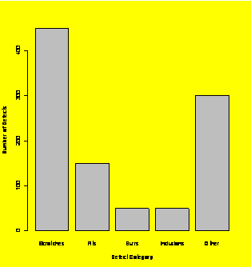
### Example 1.2
(p. 3)
Histogram of example data with forced categories.
hist.data=c(52,88,56,79,72,91,85,88,68,63,76,73,86,95,12,69)
hist(hist.data,breaks=c(10,20,30,40,50,60,70,80,90,100))
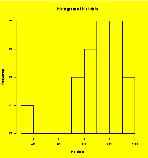
### Extra:
Density plot.
plot(density(hist.data))
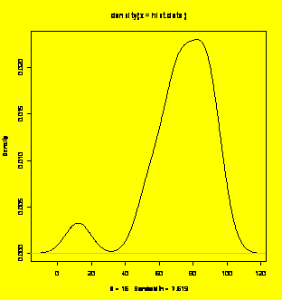
### Example 1.3
(p. 4)
stripchart(hist.data);title("Stripchart
or dotplot of histogram data.")#Add the title to the dotplot
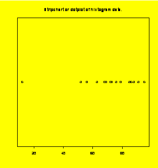
### Alternative
dotplot
using lattice package:
library(lattice)
trellis.par.set(background=0)
#Change
background from default gray (1) to white (0)
dotplot(hist.data)
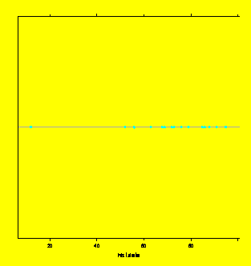
### Example 1.4
(p. 4) Stem
and leaf plot.
stem(hist.data)
The decimal point is 1 digit(s) to the right of the |
0 | 2
2 |
4 | 26
6 | 3892369
8 | 568815
### Example 1.5
(p. 6)
Boxplot.
boxplot(hist.data,horizontal=TRUE)
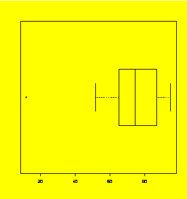
### Example 1.6
(p. 7)
Scatter plot.
Quiz=c(12,14,13,15,15,16,16)
Exam=c(55,60,70,75,90,90,100)
plot(Quiz,Exam)
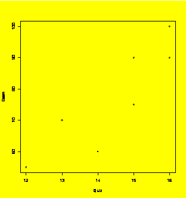
### Example 1.7
(p. 8)
Multi-vari chart.
Quiz.Student=c(1,2,3,4,5,1,2,3,4,5,1,2,3,4,5,1,2,3,4,5,1,2,3,4,5,1,2,3,4,5)
#Alternatively: Quiz.Student=gl(5,1,30)
Quiz.Class=c(1,1,1,1,1,1,1,1,1,1,2,2,2,2,2,2,2,2,2,2,3,3,3,3,3,3,3,3,3,3)
#Quiz.Class=gl(3,10,30)
Quiz.Which=c(1,1,1,1,1,2,2,2,2,2,1,1,1,1,1,2,2,2,2,2,1,1,1,1,1,2,2,2,2,2)
#Quiz.Which=gl(2,5,30)
Quiz.Score=c(87,82,78,85,73,86,92,82,85,97,81,85,85,80,96,97,93,92,88,88,84,
96,86,92,83,100,91,102,99,101)
Quiz=data.frame(Quiz.Student,Quiz.Class,Quiz.Which,Quiz.Score)
#Makes the data frame
plot(Quiz.Score~Quiz.Class,pch=Quiz.Which)
### After the
plot is
created, add the legend to it with the following command:
legend(2.5,80,legend=c(1,2),pch=c(1,2))
#Adds legend at position(2.5,80)
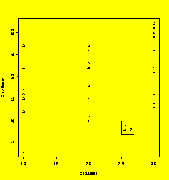
### Example 1.7
(p. 8)
Alternative multi-vari chart using lattice package:
library(lattice)
xyplot(Quiz.Score~Quiz.Class|
Quiz.Which)
#Plots Score vs. Class in two panels defined by Which
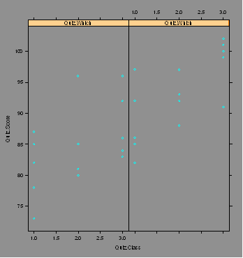
### Example 1.9
(p. 16)
Script that creates and plots random normal data.
random.normal=rnorm(40,300,20)
#(sample size, mean, standard deviation)
par(mfrow=c(1,3))
#Three graphs on one page, 1 row by 3 columns
hist(random.normal)
stripchart(random.normal,vertical=TRUE)
boxplot(random.normal)
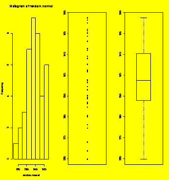
par(mfrow=c(1,1)
#Reset the graphics display to 1 row and 1 column
#################################################################################
#
CHAPTER 2: Descriptive Statistics
#################################################################################
### Example 2.15
(p. 34)
Calculating statistics from sample data.
Example.Data=c(16,14,12,18,9,15)
length(Example.Data)
#Sample size
[1]
6
mean(Example.Data)
[1]
14
sd(Example.Data)
[1]
3.162278
range(Example.Data)#Reports
min and max values
[1]
9 18
diff(range(Example.Data))#Sample
range
[1]
9
summary(Example.Data)#Common
summary statistics
Min.
1st
Qu. Median Mean 3rd Qu. Max.
9.00 12.50 14.50 14.00
15.75 18.00
### Example 2.16
(p. 35)
Calculating and plotting the normal probability density function.
x=seq(320,480,1)
#The array of x values
pdf=dnorm(x,400,20)
#The corresponding pdf
y.max=1.1*max(pdf)
#Upper limit for y axis
plot(x,pdf,type="l")
#Create the plot, type is "l"ine
### Now add the
requested
reference lines
xref=c(370,370)
yref=c(0,y.max)
lines(xref,yref)
#Reference line at x=370
xref=c(400,400)
lines(xref,yref)
#Reference line at x=400
xref=c(410,410)
lines(xref,yref)
#Reference line at x=410
xref=range(x)
yref=c(0,0)
#Reference line at y=0
lines(xref,yref)
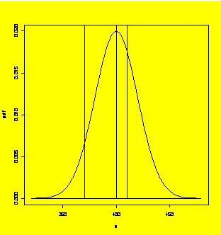
##################################################################################
#
CHAPTER 3: Inferential Statistics
##################################################################################
# Many of the
problems in
this chapter make use of summarized data. For example, the
# sample mean,
standard
deviation, and sample size are given instead of the raw data
# for problems in
calculating confidence intervals and performing hypothesis tests.
# Normally one
would use R
to perform all of these operations. To fill these data gaps
# and demonstrate
the use
of R, the affected examples shown here use data sets from
# other examples
in the
book.
### Example 3.2
(p. 42)
Confidence interval for the population mean (sigma known).
### Example: For
the data
from Example 3.24, find the 95% confidence interval for the population
### mean assuming
that the
population standard deviation is known to be sigma = 5.
one.sample.z.ci=function(x,sigma,conf=0.95)
#Function to find the one-sample two-sided z CI
{
zhalfalpha=-qnorm((1-conf)/2);SE=sigma/sqrt(length(x))
mean(x)+c(-zhalfalpha*SE,zhalfalpha*SE)
#Here's the CI calculation
}
Y=c(22,25,32,18,23,15,30,27,19,23)
#Data from Example 3.24
one.sample.z.ci(Y,5)
#Call the function with sigma=5, 95% default confidence
[1]
20.30102 26.49898
### Example 3.6
(p. 47)
Hypothesis test for one sample location (sigma known).
### Example: Test
the data
from Example 3.24 to see if the population mean is different from
### mu = 20
assuming that
the population standard deviation is known to be sigma = 5.
one.sample.z.test=function(x,sigma,mu0)
#Function for the one-sample two-sided z test
{
z=(mean(x)-mu0)/(sigma/sqrt(length(x)))
2*pnorm(-abs(z))
}
Y=c(22,25,32,18,23,15,30,27,19,23)
#Data from Example 3.24
one.sample.z.test(Y,5,20)
#Function reports the two-sided p value
[1]
0.03152763
### Example 3.10
(p. 54)
Hypothesis test for one sample location (sigma unknown).
### Example: Test
the data
from Example 3.24 to see if the population mean is different from mu =
20.
Y=c(22,25,32,18,23,15,30,27,19,23)
#Data from Example 3.24
t.test(Y,mu=20)
#Reports the p value and CI
One
Sample t-test
data:
Y
t
= 2.0223, df = 9, p-value = 0.07385
alternative
hypothesis: true mean is not equal to 20
95
percent confidence interval:
19.59670
27.20330
sample
estimates:
mean
of x
23.4
### Example 3.11
(p. 55)
Confidence interval for the population mean (sigma unknown).
### Example: For
the data
from Example 3.24, determine the 95% confidence interval for the
population
mean.
Y=c(22,25,32,18,23,15,30,27,19,23)
#Data from Example 3.24
t.test(Y)
#Reports the p value for
mu0=0 and
the CI
One
Sample t-test
data:
Y
t
= 13.9181, df = 9, p-value = 2.158e-07
alternative
hypothesis: true mean is not equal to 0
95
percent confidence interval:
19.59670
27.20330
sample
estimates:
mean
of x
23.4
### Example 3.12
(p. 57)
Hypothesis test for two samples location (sigmas unknown but equal).
### Example: Test
the data
from Example 3.20 for a difference between the population means
### assuming that
the
population variances are equal.
Mfg=gl(2,10,20)
Gain=c(44,41,48,33,39,51,42,36,48,47,51,54,46,53,56,43,47,50,56,53)
t.test(Gain~Mfg,var.equal=TRUE)
#Equal variance assumption should be tested
Two
Sample t-test
data:
Gain by Mfg
t
= -3.4867, df = 18, p-value = 0.002633
alternative
hypothesis: true difference in means is not equal to 0
95
percent confidence interval:
-12.820435
-3.179565
sample
estimates:
mean
in group 1 mean in group 2
42.9
50.9
t.test(Gain~Mfg)
#Welch's method is preferred
Welch
Two Sample
t-test
data:
Gain by Mfg
t
= -3.4867, df = 16.776, p-value = 0.002871
alternative
hypothesis: true difference in means is not equal to 0
95
percent confidence interval:
-12.845777
-3.154223
sample
estimates:
mean
in group 1 mean in group 2
50.9
### Example 3.13
(p. 60)
Paired sample t test.
x1=c(44,62,59,29,78,79,92,38)
x2=c(46,58,56,26,72,80,90,35)
x=c(x1,x2)
ID=gl(2,8,16)
t.test(x~ID,paired=TRUE)
Paired
t-test
data:
x by ID
t
= 2.443, df = 7, p-value = 0.04456
alternative
hypothesis: true difference in means is not equal to 0
95
percent confidence interval:
0.07221536
4.42778464
sample
estimates:
mean
of the differences
2.25
### Note: the
p-value
reported in the book is incorrect. The correct p-value is
### given by:
P(-2.443 <
t < 2.443; df=7) = 0.04456
### Example 3.14
(p. 64)
Chi-square test for one population variance.
### Example: Test
the data
from Example 3.24 to determine if the population variance
### is larger
than sigma =
3.
chisq.p=function(x,sigma0,alt)
{
df=length(x)-1
chisq.statistic=df*var(x)/sigma0^2
if (alt==1)
{
#Right tail test for Ho: sigma > sigma0
pchisq(chisq.statistic,df,lower.tail=F
} else
{
#Left tail test for Ha: sigma < sigma0
pchisq(chisq.statistic,df,lower.tail=TRUE)}
}
Y=c(22,25,32,18,23,15,30,27,19,23)
chisq.p(Y,3,1)
[1]
0.0008607428
### Example 3.20
(p. 70)
Tukey's quick test.
Mfg=c("A","A","A","A","A","A","A","A","A","A","B","B","B","B","B","B","B","B","B","B")
Gain=c(44,41,48,33,39,51,42,36,48,47,51,54,46,53,56,43,47,50,56,53)
Mfg.Gain=data.frame(Mfg,Gain)
plot(Mfg.Gain)
lines(c(1,2),rep(max(subset(Mfg.Gain$Gain,Mfg=="A")),2))
lines(c(1,2),rep(min(subset(Mfg.Gain$Gain,Mfg=="B")),2))

### Example 3.24
(p. 77)
Normal probability plot.
Y=c(22,25,32,18,23,15,30,27,19,23)
qqnorm(Y);qqline(Y)
#Creates the normal plot and a line through Q1 and Q3
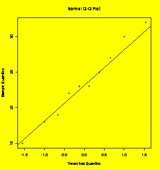
shapiro.test(Y)
#Shapiro-Wilk quantitative test for normality
Shapiro-Wilk
normality test
data:
Y
W
= 0.9793, p-value = 0.9613
##################################################################################
#
CHAPTER 4: DOE Language and Concepts
##################################################################################
### Example 4.9
(p. 111)
Golf ball flight distance as a function of temperature.
Distance=c(31.5,32.7,33.98,32.1,32.78,34.65,32.18,33.53,34.98,32.63,33.98,35.3,32.7,34.64,36.53,32.0,34.5,38.2)
Temperature=rep(c(66,-12,23),6)
plot(Distance~Temperature)
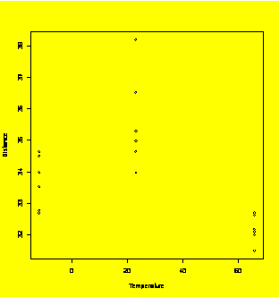
### Example 4.12
(p. 4.12) Analysis
of saw blade cuts versus lubricant.
Blade=c(5,1,4,9,3,2,3,10,2,6,7,9,8,6,5,8,1,7,4,10)
Lube=c(2,2,1,1,2,1,1,2,2,2,1,2,1,1,1,2,1,2,2,1)
Cuts=c(162,145,117,135,145,124,131,147,146,134,130,142,134,138,123,161,139,139,149,139)
Cuts.data =
data.frame(Blade,Lube,Cuts)
library(lattice)
xyplot(Cuts~Lube,groups=Blade,type
= "b",main="Cuts versus Lube by Blade",data=Cuts.data)
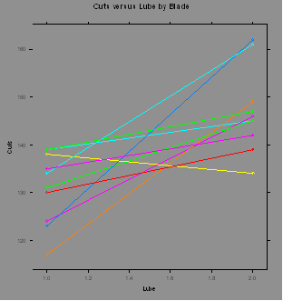
Cuts.data.1 =
subset(Cuts.data,Lube==1)
#Subset of the first lube (LAU-003)
Cuts.data.2 =
subset(Cuts.data,Lube==2)
#Subset of the second lube (LAU-016)
Cuts.data.1=Cuts.data.1[order(Cuts.data.1[,1]),]
#Ordered by blade
Cuts.data.2=Cuts.data.2[order(Cuts.data.2[,1]),]
t.test(Cuts.data.1$Cuts,Cuts.data.2$Cuts,paired=TRUE)
#Paired sample t test
Paired
t-test
data:
Cuts.data.1$Cuts and Cuts.data.2$Cuts
t
= -3.7482, df = 9, p-value = 0.004568
alternative
hypothesis: true difference in means is not equal to 0
95
percent confidence interval:
-25.656582
-6.343418
sample
estimates:
mean
of the differences
-16
##################################################################################
#
CHAPTER 5: Experiments for One-Way Classifications
##################################################################################
### Example 5.9
(p. 169)
ANOVA for a one-way classification with nine treatments.
Y=c(80.9,78.3,77.8,76.6,82.2,74.5,80.5,77,82.5,78.2,81.8,83.5,84.2,75.7,81.4,
78,81.9,83.2,76.2,78.7,79.5,75.3,82.2,78.7,74.2,84.1,83.7,80.6,84.3,80.5,
77.2,82.6,79.1,83.7,81.9,77.9,78.3,83.1,78.9,83.4,81,77.8,77.4,78.4,78.1,
74.5,79,79.7,83.1,76.4,80.2,80.9,81.2,84,83.7,80.3,80.8,83.6,83.4,78.6,
82.8,73.6,82.7,86.6,83.6,85.6,83.9,86,77,80,84.2,76.7,83.1,77.9,77.9,79.9,
83.7,80.5,81.4,74.8,86.1)
X=gl(9,9,81)
boxplot(Y~X)
#Boxplots
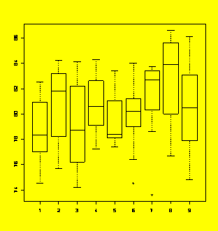
Y.aov=aov(Y~X)
#Perform the ANOVA
summary(Y.aov)
#Report the ANOVA table
Df
Sum Sq Mean Sq
F value Pr(>F)
X
8 93.86 11.73 1.2201 0.2998
Residuals
72 692.34 9.62
aggregate(Y,list(X),FUN=mean)
#Report the Y means by X
Group.1
x
1
1 78.92222
2
2 80.87778
3
3 79.17778
4
4 80.86667
5
5 79.60000
6
6 79.88889
7
7 81.05556
8
8 82.62222
9
9 80.58889
TukeyHSD(Y.aov)
#Report the Tukey HSD CIs
Tukey
multiple
comparisons of means
95% family-wise confidence level
Fit:
aov(formula = Y ~ X)
$X
diff
lwr upr
2-1
1.95555556 -2.7193408 6.630452
3-1
0.25555556 -4.4193408 4.930452
4-1
1.94444444 -2.7304520 6.619341
5-1
0.67777778 -3.9971186 5.352674
6-1
0.96666667 -3.7082297 5.641563
7-1
2.13333333 -2.5415631 6.808230
8-1
3.70000000 -0.9748964 8.374896
9-1
1.66666667 -3.0082297 6.341563
3-2
-1.70000000 -6.3748964 2.974896
4-2
-0.01111111 -4.6860075 4.663785
5-2
-1.27777778 -5.9526742 3.397119
6-2
-0.98888889 -5.6637853 3.686008
7-2
0.17777778 -4.4971186 4.852674
8-2
1.74444444 -2.9304520 6.419341
9-2
-0.28888889 -4.9637853 4.386008
4-3
1.68888889 -2.9860075 6.363785
5-3
0.42222222 -4.2526742 5.097119
6-3
0.71111111 -3.9637853 5.386008
7-3
1.87777778 -2.7971186 6.552674
8-3
3.44444444 -1.2304520 8.119341
9-3
1.41111111 -3.2637853 6.086008
5-4
-1.26666667 -5.9415631 3.408230
6-4
-0.97777778 -5.6526742 3.697119
7-4
0.18888889 -4.4860075 4.863785
8-4
1.75555556 -2.9193408 6.430452
9-4
-0.27777778 -4.9526742 4.397119
6-5
0.28888889 -4.3860075 4.963785
7-5
1.45555556 -3.2193408 6.130452
8-5
3.02222222 -1.6526742 7.697119
9-5
0.98888889 -3.6860075 5.663785
7-6
1.16666667 -3.5082297 5.841563
8-6
2.73333333 -1.9415631 7.408230
9-6
0.70000000 -3.9748964 5.374896
8-7
1.56666667 -3.1082297 6.241563
9-7
-0.46666667 -5.1415631 4.208230
9-8
-2.03333333 -6.7082297 2.641563
plot(TukeyHSD(Y.aov))
#Plot the CIs
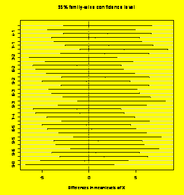
dotplot(residuals(Y.aov)~X)
#
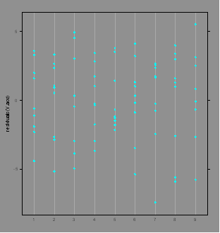
qqnorm(residuals(Y.aov));
qqline(residuals(Y.aov)) #
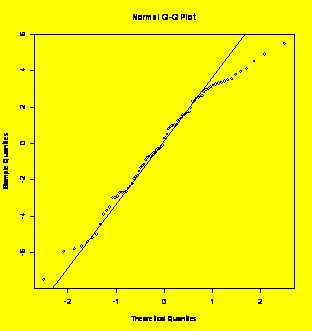
### Example 5.11
(p. 180)
ANOVA of log-transformed data.
Y=c(31,36,11,24,37,16,18,20,18,20,13,23,6,9,11,9,6,8,11,5,12,4,9,6,10,
15,21,9,29,32,28,27,16,16,20,32,35,19,17,24,18,20,33,24,40,24,10,14,45,36,
49,32,47,89,47,27,58,73,66,77)
X=gl(5,12,60)
boxplot(Y~X)
#Check the boxplots - trouble!
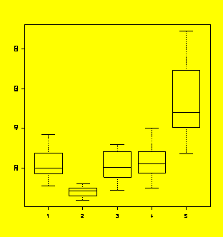
Y.aov=aov(Y~X)
#
qqnorm(residuals(Y.aov));
qqline(residuals(Y.aov)) #Check the ANOVA residuals -
trouble!
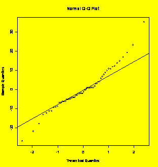
boxplot(log10(Y)~X,ylab="log(Y)")
#Boxplot of log transformed Y values - looks better!
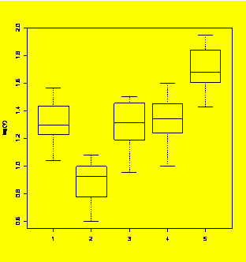
logY.aov=aov(log10(Y)~X)
#
qqnorm(residuals(logY.aov));
qqline(residuals(logY.aov)) #
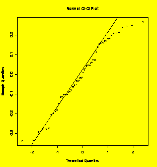
summary(logY.aov)
#Reports the ANOVA of the log-transformed data
Df
Sum Sq Mean Sq
F value Pr(>F)
X
4 4.1015 1.0254 36.669 6.371e-15 ***
Residuals
55 1.5380
0.0280
---
Signif.
codes: 0 `***' 0.001 `**' 0.01 `*' 0.05 `.' 0.1 ` ' 1
### Example 5.12
(p. 183)
Plots of original and transformed Poisson random samples with different
means.
Random.Poisson =
c(rpois(20,3),rpois(20,9),rpois(20,27),rpois(20,81),rpois(20,243))
#Random Poisson samples
Treatment=gl(5,20,100)
#Treatment codes 1:5
plot(Random.Poisson~Treatment)
#Plot of raw counts - trouble!
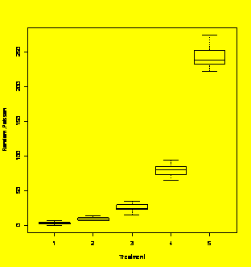
ftc.Random.Poisson=(sqrt(Random.Poisson)+sqrt(Random.Poisson+1))/2
#Transform the counts
plot(ftc.Random.Poisson~Treatment)
#Plot of the transformed counts
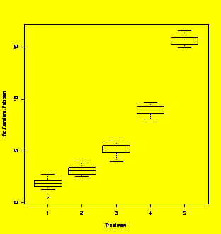
ftc.resid=residuals(aov(ftc.Random.Poisson~Treatment))
#ANOVA residuals after transform
qqnorm(ftc.resid);qqline(ftc.resid)
#
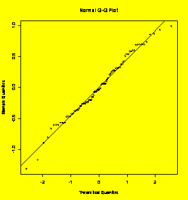
### Example 5.14
(p. 188)
Sample-size and power calculations for one-way ANOVA.
### Note: The
function
power.anova.test specifies the problem in terms of the between-treatment
### and
within-treatment
variances, which have to be calculated first.
Biases=c(-5,5,0,0,0)
#Treatment biases relative to grand mean
BTV=var(Biases)
#Between treatment variance
#BTV=2*5^2/
(5-1)
#Alternative BTV calculation
WTV=4.2^2
#Within treatment variance
power.anova.test(groups=5,between.var=BTV,within.var=WTV,power=0.90)
#Find the sample size (Answer is n=7)
Balanced
one-way
analysis of variance power calculation
groups = 5
n = 6.465695
between.var = 12.5
within.var = 17.64
sig.level = 0.05
power = 0.9
NOTE:
n is number in each group
power.anova.test(groups=5,n=7,between.var=BTV,within.var=WTV)
#Check the exact power for n=7
Balanced
one-way
analysis of variance power calculation
groups = 5
n = 7
between.var = 12.5
within.var = 17.64
sig.level = 0.05
power = 0.9279148
NOTE:
n is number in each group
##################################################################################
#
CHAPTER 6: Experiments for Multi-Way Classifications
##################################################################################
##########################
WARNING!!! ############################################
### The analyses
shown here
using the aov() function are only valid for balanced
### experiment
designs. If
you have an unbalanced design or a balanced design with
### missing
values, you
MUST use the Anova() function in the car package with
### Type II sums
of
squares. (What R and SAS call Type II sums of squares are called
### Type III sums
of
squares in MINITAB and some other packages.)
##################################################################################
### Example 6.2
(p. 195)
Review of one-way ANOVA.
Y=c(14,17,13,12,20,21,16,15,25,29,24,22)
Tr=gl(3,4,12)
Y.aov=aov(Y~Tr)
summary(Y.aov)
Df
Sum Sq
Mean Sq F value Pr(>F)
Tr
2 248.000 124.000 16.909 0.0008949 ***
Residuals
9 66.000
7.333
---
Signif.
codes: 0 `***' 0.001 `**' 0.01 `*' 0.05 `.' 0.1 ` ' 1
par(mfrow=c(2,2))
plot(Y.aov)
#Residuals diagnostic plots
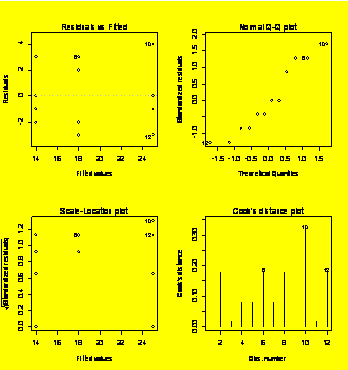
### Example 6.12
(p. 216)
Two-way ANOVA.
Y=c(18,16,11,42,40,35,34,30,29,46,42,41)
A=gl(4,3,12)
B=gl(3,1,12)
Y.aov=aov(Y~A+B)
summary(Y.aov)
Df
Sum Sq
Mean Sq F value Pr(>F)
A
3 1380.00 460.00 345 4.179e-07 ***
B
2 72.00 36.00
27 0.001 **
Residuals
6 8.00
1.33
---
Signif.
codes: 0 `***' 0.001 `**' 0.01 `*' 0.05 `.' 0.1 ` ' 1
par(mfrow=c(2,2))
plot(Y.aov)
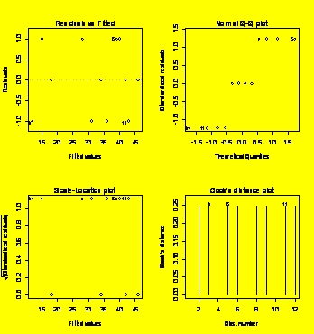
### Example 6.12
(p. 216) Two-way
ANOVA with interaction.
Y=c(29,33,24,22,46,48,48,44,36,32,26,22)
A=gl(3,4,12)
B=gl(2,2,12)
Y.aov=aov(Y~A*B)
summary(Y.aov)
Df
Sum Sq Mean Sq
F value Pr(>F)
A
2 920.67 460.33 76.7222 5.329e-05 ***
B
1 120.33 120.33 20.0556 0.00420 **
A:B
2 44.67 22.33 3.7222 0.08888
.
Residuals
6 36.00
6.00
---
Signif.
codes: 0 `***' 0.001 `**' 0.01 `*' 0.05 `.' 0.1 ` ' 1
### The
interaction term is
not significant, so drop it from the model.
Y.aov=aov(Y~A+B)
summary(Y.aov)
Df
Sum Sq Mean Sq
F value Pr(>F)
A
2 920.67 460.33 45.653 4.212e-05 ***
B
1 120.33 120.33 11.934 0.008637 **
Residuals
8 80.67
10.08
---
Signif.
codes: 0 `***' 0.001 `**' 0.01 `*' 0.05 `.' 0.1 ` ' 1
par(mfrow=c(2,2))
plot(Y.aov)
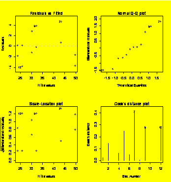
### Example 6.13
(p. 217)
Analysis of a rotator cuff repair anchor.
Anchor=c(1,3,2,3,2,1,2,2,3,1,3,1,2,3,2,3,1,1,1,2,2,3,3,1,2,2,1,3,1,3,2,1,3,1,2,3,3,3,2,1,1,2,1,2,2,3,1,3)
Foam=c(1,1,2,2,1,2,1,2,2,1,1,2,2,2,1,1,2,1,2,1,2,2,1,1,1,2,2,1,1,2,1,2,1,1,2,2,2,1,1,2,1,2,2,1,2,1,1,2)
Force=c(191,194,75,146,171,79,188,76,136,195,207,86,71,145,184,195,81,198,98,178,77,138,202,193,169,63,90,
194,191,132,172,86,203,196,64,130,132,209,180,85,182,67,88,191,70,197,205,143)
par(mfrow=c(1,2))
plot(Force~Foam,pch=Anchor)
plot(Force~Anchor,pch=Foam)
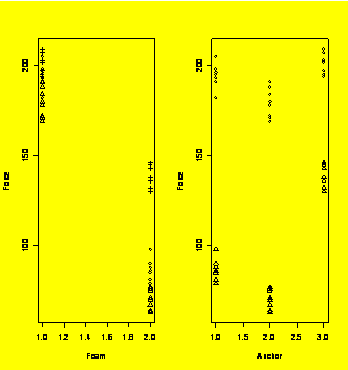
Anchor=factor(Anchor)
Foam=factor(Foam)
Force.aov=aov(Force~Anchor*Foam)
summary(Force.aov)
Df
Sum Sq Mean
Sq F value Pr(>F)
Anchor
2 16084 8042 194.579 < 2.2e-16 ***
Foam
1 103324 103324 2499.943 < 2.2e-16 ***
Anchor:Foam
2 5556 2778 67.209 8.144e-14
***
Residuals
42 1736
41
---
Signif.
codes: 0 `***' 0.001 `**' 0.01 `*' 0.05 `.' 0.1 ` ' 1
par(mfrow=c(2,2))
plot(Force.aov)
#Residuals diagnostic plots
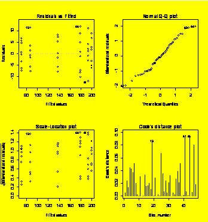
TukeyHSD(Force.aov)
Tukey
multiple
comparisons of means
95% family-wise confidence level
Fit:
aov(formula = Force ~ Anchor * Foam)
$Anchor
diff
lwr upr
2-1
-15.5000 -21.02211 -9.977886
3-1
28.6875 23.16539 34.209614
3-2
44.1875 38.66539 49.709614
$Foam
diff
lwr upr
2-1
-92.79167 -96.53693 -89.0464
$"Anchor:Foam"
diff
lwr upr
2:1-1:1
-14.750 -24.345887 -5.154113
3:1-1:1
6.250 -3.345887 15.845887
1:2-1:1
-107.250 -116.845887 -97.654113
2:2-1:1
-123.500 -133.095887 -113.904113
3:2-1:1
-56.125 -65.720887 -46.529113
3:1-2:1
21.000 11.404113 30.595887
1:2-2:1
-92.500 -102.095887 -82.904113
2:2-2:1
-108.750 -118.345887 -99.154113
3:2-2:1
-41.375 -50.970887 -31.779113
1:2-3:1
-113.500 -123.095887 -103.904113
2:2-3:1
-129.750 -139.345887 -120.154113
3:2-3:1
-62.375 -71.970887 -52.779113
2:2-1:2
-16.250 -25.845887 -6.654113
3:2-1:2
51.125 41.529113 60.720887
3:2-2:2
67.375 57.779113 76.970887
par(mfrow=c(2,2))
plot(TukeyHSD(Force.aov))
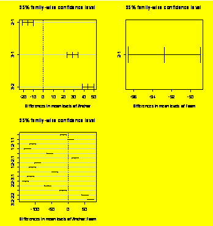
library(multcomp)
#Multiple
comparisons package
summary(simint(Y~X,
whichf="X",type = "Tukey"))
#TukeyHSD
CIs and p values
Simultaneous
95% confidence intervals: Tukey contrasts
Call:
simint.formula(formula
= Y ~ X, type = "Tukey")
Tukey
contrasts for factor X
Contrast
matrix:
X1 X2 X3
X4
X5 X6 X7 X8 X9
X2-X1
0 -1 1 0
0 0 0
0 0 0
X3-X1
0 -1 0 1
0 0 0
0 0 0
X4-X1
0 -1 0 0
1 0 0
0 0 0
X5-X1
0 -1 0 0
0 1 0
0 0 0
X6-X1
0 -1 0 0
0 0 1
0 0 0
X7-X1
0 -1 0 0
0 0 0
1 0 0
X8-X1
0 -1 0 0
0 0 0
0 1 0
X9-X1
0 -1 0 0
0 0 0
0 0 1
X3-X2
0 0 -1 1
0 0 0
0 0 0
X4-X2
0 0 -1 0
1 0 0
0 0 0
X5-X2
0 0 -1 0
0 1 0
0 0 0
X6-X2
0 0 -1 0
0 0 1
0 0 0
X7-X2
0 0 -1 0
0 0 0
1 0 0
X8-X2
0 0 -1 0
0 0 0
0 1 0
X9-X2
0 0 -1 0
0 0 0
0 0 1
X4-X3
0 0 0 -1
1 0 0
0 0 0
X5-X3
0 0 0 -1
0 1 0
0 0 0
X6-X3
0 0 0 -1
0 0 1
0 0 0
X7-X3
0 0 0 -1
0 0 0
1 0 0
X8-X3
0 0 0 -1
0 0 0
0 1 0
X9-X3
0 0 0 -1
0 0 0
0 0 1
X5-X4
0 0 0 0
-1 1
0 0 0 0
X6-X4
0 0 0 0
-1 0
1 0 0 0
X7-X4
0 0 0 0
-1 0
0 1 0 0
X8-X4
0 0 0 0
-1 0
0 0 1 0
X9-X4
0 0 0 0
-1 0
0 0 0 1
X6-X5
0 0 0
0 0 -1 1
0 0 0
X7-X5
0 0 0
0 0 -1 0
1 0 0
X8-X5
0 0 0
0 0 -1 0
0 1 0
X9-X5
0 0 0
0 0 -1 0
0 0 1
X7-X6
0 0 0
0 0 0
-1
1 0 0
X8-X6
0 0 0
0 0 0
-1
0 1 0
X9-X6
0 0 0
0 0 0
-1
0 0 1
X8-X7
0 0 0
0 0 0 0 -1 1 0
X9-X7
0 0 0
0 0 0 0 -1 0 1
X9-X8
0 0 0
0 0 0 0 0 -1 1
Absolute
Error Tolerance:
0.001
95 %
quantile: 3.198
Coefficients:
Estimate
2.5 % 97.5 % t value Std.Err. p raw p Bonf p
adj
X2-X1 1.956
-2.720 6.631 1.338
1.462 0.185 1.000 0.916
X3-X1 0.256
-4.420 4.931 0.175
1.462 0.862 1.000 1.000
X4-X1 1.944
-2.731 6.620 1.330
1.462 0.188 1.000 0.919
X5-X1 0.678
-3.998 5.353 0.464
1.462 0.644 1.000 1.000
X6-X1 0.967
-3.709 5.642 0.661
1.462 0.511 1.000 0.999
X7-X1 2.133
-2.542 6.809 1.459
1.462 0.149 1.000 0.870
X8-X1 3.700
-0.975 8.375 2.531
1.462 0.014 0.488 0.235
X9-X1 1.667
-3.009 6.342 1.140
1.462 0.258 1.000 0.966
X3-X2 -1.700
-6.375 2.975 -1.163
1.462 0.249 1.000 0.962
X4-X2 -0.011
-4.686 4.664 -0.008
1.462 0.994 1.000 1.000
X5-X2 -1.278
-5.953 3.398 -0.874
1.462 0.385 1.000 0.994
X6-X2 -0.989
-5.664 3.686 -0.676
1.462 0.501
1.000 0.999
X7-X2 0.178
-4.498 4.853 0.122
1.462 0.904 1.000 1.000
X8-X2 1.744
-2.931 6.420 1.193
1.462 0.237 1.000 0.955
X9-X2 -0.289
-4.964 4.386 -0.198
1.462 0.844 1.000 1.000
X4-X3 1.689
-2.986 6.364 1.155
1.462 0.252 1.000 0.963
X5-X3 0.422
-4.253 5.098 0.289
1.462 0.774 1.000 1.000
X6-X3 0.711
-3.964 5.386 0.486
1.462 0.628 1.000 1.000
X7-X3 1.878
-2.798 6.553 1.285
1.462 0.203 1.000 0.933
X8-X3 3.444
-1.231 8.120 2.356
1.462 0.021 0.763 0.324
X9-X3 1.411
-3.264 6.086 0.965
1.462 0.338 1.000 0.988
X5-X4 -1.267
-5.942 3.409 -0.867
1.462 0.389 1.000 0.994
X6-X4 -0.978
-5.653 3.698 -0.669
1.462 0.506 1.000 0.999
X7-X4 0.189
-4.486 4.864 0.129
1.462 0.898 1.000 1.000
X8-X4 1.756
-2.920 6.431 1.201
1.462 0.234 1.000 0.954
X9-X4 -0.278
-4.953 4.398 -0.190
1.462 0.850 1.000 1.000
X6-X5 0.289
-4.386 4.964 0.198
1.462 0.844 1.000 1.000
X7-X5 1.456 -3.220 6.131
0.996 1.462 0.323 1.000 0.985
X8-X5 3.022
-1.653 7.698 2.067
1.462 0.042 1.000 0.503
X9-X5 0.989
-3.686 5.664 0.676
1.462 0.501 1.000 0.999
X7-X6 1.167
-3.509 5.842 0.798
1.462 0.427 1.000 0.997
X8-X6 2.733 -1.942 7.409
1.870 1.462 0.066 1.000 0.637
X9-X6 0.700
-3.975 5.375 0.479
1.462 0.633 1.000 1.000
X8-X7 1.567
-3.109 6.242 1.072
1.462 0.287 1.000 0.976
X9-X7 -0.467
-5.142 4.209 -0.319
1.462 0.750 1.000 1.000
X9-X8 -2.033
-6.709 2.642 -1.391
1.462 0.169 1.000 0.898
### Example 6.14
(p. 224)
Commands to create the 3x8x5 factorial design matrix with two
replicates.
### Variables are
going to
be named A, B, C, and Rep:
A=gl(3,80,240)
B=gl(8,10,240)
C=gl(5,2,24)
Rep=gl(2,1,120)
expt.design =
data.frame(A,B,C)
expt.design
A
B C
1
1 1 1
2
1 1 1
3
1 1 2
4
1 1 2
...
235
3 8 5
236
3 8 5
237
3 8 1
238
3 8 1
239
3 8 2
240
3 8 2
### Example 6.15
(p. 226)
Analysis of a two-way design with blocking on replicates.
Y=c(57,75,46,78,69,68,97,83,81,64,83,60)
A=c(1,2,1,2,2,1,2,2,1,1,2,1)
B=c(1,1,3,3,2,2,1,3,1,3,2,2)
Block=gl(2,6,12)
A=factor(A)
B=factor(B)
Block=factor(Block)
Y.aov=aov(Y~Block+A*B)
summary(Y.aov)
Df
Sum Sq Mean Sq
F value Pr(>F)
Block
1 468.75 468.75 6.4081 0.05244 .
A
1 990.08 990.08 13.5350 0.01431 *
B
2 208.50 104.25 1.4252 0.32375
A:B
2 93.17 46.58 0.6368 0.56706
Residuals
5 365.75
73.15
---
Signif.
codes: 0 `***' 0.001 `**' 0.01 `*' 0.05 `.' 0.1 ` ' 1
par(mfrow=c(2,2))
plot(Y.aov)
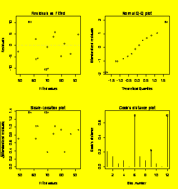
##################################################################################
#
CHAPTER 7: Advanced ANOVA Topics
##################################################################################
### Example 7.1
(p. 233)
Analysis of a three-variable
A=c(1,1,1,2,2,2,3,3,3,1,1,1,2,2,2,3,3,3)
#equivalent to A=gl(3,3,18)
B=c(1,2,3,1,2,3,1,2,3,1,2,3,1,2,3,1,2,3)
#equivalent to B=gl(3,1,18)
C=c(1,2,3,2,3,1,3,1,2,1,2,3,2,3,1,3,1,2)
Y=c(63,73,78,66,63,92,59,49,99,52,67,82,60,62,73,46,73,79)
A=factor(A)
B=factor(B)
C=factor(C)
Y.lm = lm(Y~A+B+C)
anova(Y.lm)
#Report the ANOVA table ...
Analysis
of Variance Table
Response:
Y
Df Sum Sq Mean Sq F value
Pr(>F)
A
2 12.33 6.17 0.0782
0.9252806
B
2 2210.33 1105.17 14.0163 0.0009436 ***
C
2 268.00 134.00 1.6995 0.2274283
Residuals
11 867.33
78.85
---
Signif.
codes: 0 `***' 0.001 `**' 0.01 `*' 0.05 `.' 0.1 ` ' 1
summary(Y.lm)
#And summary statistics including coefficients.
Call:
lm(formula
= Y ~ A + B + C)
Residuals:
Min 1Q
Median
3Q Max
-12.6667
-4.2917 0.9167 5.2917 11.3333
Coefficients:
Estimate Std. Error t value Pr(>|t|)
(Intercept)
56.5000 5.5374 10.203 6.04e-07 ***
A2
0.1667 5.1267 0.033
0.974648
A3
-1.6667 5.1267 -0.325
0.751207
B2
6.8333 5.1267 1.333
0.209515
B3
26.1667 5.1267 5.104 0.000342 ***
C2
7.0000 5.1267 1.365
0.199397
C3
-2.0000 5.1267 -0.390
0.703899
---
Signif.
codes: 0 `***' 0.001 `**' 0.01 `*' 0.05 `.' 0.1 ` ' 1
Residual
standard error: 8.88 on 11 degrees of freedom
Multiple
R-Squared: 0.7417, Adjusted R-squared: 0.6008
F-statistic:
5.265 on 6 and 11 DF, p-value: 0.008713
TukeyHSD(aov(Y~A+B+C),which="B")
#Reports Tukey HSD CIs for differences between the means of B.
Tukey
multiple
comparisons of means
95% family-wise confidence level
Fit:
aov(formula = Y ~ A + B + C)
$B
diff lwr upr
2-1
6.833333 -7.01309 20.67976
3-1
26.166667 12.32024 40.01309
3-2
19.333333 5.48691 33.17976
plot(TukeyHSD(aov(Y~A+B+C),which="B"))
#Plots the CIS for B
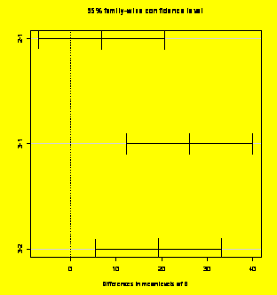
library(multcomp)
summary(simint(Y~A+B+C,whichf="B",type="Tukey"))#TukeyHSD
CIs and p values
Simultaneous
95% confidence intervals: Tukey contrasts
Call:
simint.formula(formula
= Y ~ A + B + C, whichf =
"B", type = "Tukey")
Tukey
contrasts for factor B, covariables: A +
C
Contrast
matrix:
B1 B2
B3
B2-B1
0 0 0 -1
1 0 0 0
B3-B1
0 0 0 -1
0 1 0 0
B3-B2
0 0 0 0
-1 1 0 0
Absolute
Error Tolerance:
0.001
95 %
quantile: 2.701
Coefficients:
Estimate
2.5 % 97.5 % t value Std.Err. p raw p Bonf p
adj
B2-B1 6.833
-7.011 20.678 1.333
5.127 0.210
0.629 0.407
B3-B1 26.167
12.322 40.011 5.104
5.127 0.000
0.001 0.001
B3-B2 19.333 5.489
33.178
3.771 5.127 0.003 0.009 0.008
### Example 7.5
(p. 242)
GR&R study analysis using random effects model.
### Warning: The
R code
required to perform this variance components analysis is cryptic!
### For help on
the methods
from Chapter 7, see Pinheiro and Bates, Mixed-Effects Models in S and
S-Plus,
Springer, 2000.
Y=c(65,68,60,63,44,45,75,76,63,66,59,60,81,83,42,42,62,63,56,56,38,43,68,71,57,57,55,53,79,77,32,
37,64,65,60,61,46,46,73,71,63,62,57,60,78,82,44,42,71,69,65,66,50,47,78,78,65,68,65,62,90,85,39,41)
Part=gl(8,2,64)
#Integers 1 to 8, two times in succession, 64 values total
Op=gl(4,16,64)
Y.aov=aov(Y~1+Error(Part*Op))
#Part and Op are crossed random factors
summary(Y.aov)
Error:
Part
Df Sum Sq Mean Sq F value Pr(>F)
#Note: R refuses to report F and p values for random effects
Residuals 7 10684.0
1526.3
Error:
Op
Df Sum Sq Mean Sq F value Pr(>F)
Residuals
3 587.92
195.97
Error:
Part:Op
Df Sum Sq Mean Sq F value Pr(>F)
Residuals
21 95.203
4.533
Error:
Within
Df Sum Sq Mean Sq F value Pr(>F)
Residuals
32 99.500 3.109
### Now use lme()
to
extract the variance components:
OpPart =
10*as.numeric(Op)+as.numeric(Part)
#Create a code for the Op*Part interaction
Block=rep(1,64)
#All of the observations come from a single block
Part=factor(Part)
#Change variables from quantitative to qualitative
Op=factor(Op)
OpPart =
factor(OpPart)
grr.dataframe=data.frame(Y,Part,Op,OpPart,Block)
library(nlme)
#non-linear mixed effects package
grr.groupedData =
groupedData(Y~1|Block,data=grr.dataframe) #This object wraps the
dataframe and
its equation
grr.lme=lme(Y~1,data=grr.groupedData,random=pdBlocked(list(pdIdent(~Part-1),pdIdent(~Op-1),pdIdent(~OpPart-1))))
#???
VarCorr(grr.lme)
#Calculate the variance components
Block
= pdIdent(Part - 1), pdIdent(Op - 1), pdIdent(OpPart - 1)
Variance StdDev
Part1
190.2137137 13.7917988
Op1
11.9641758 3.4589270
OpPart11
0.7119273 0.8437578
Residual
3.1094800 1.7633718
intervals(grr.lme)
#Calculates confidence intervals for the variance components
Approximate
95% confidence intervals
Fixed
effects:
lower est. upper
(Intercept)
50.72553 61.07813 71.43072
attr(,"label")
[1]
"Fixed effects:"
Random
Effects:
Level: Block
lower est. upper
sd(Part
- 1) 8.1555365 13.7917988 23.32326
sd(Op
- 1) 1.5247709 3.4589270 7.84654
sd(OpPart
- 1) 0.2833372 0.8437578 2.51265
Within-group
standard error:
lower est. upper
1.380988
1.763372 2.251634
plot(grr.lme)
#The default plot is residuals vs. predicted values.
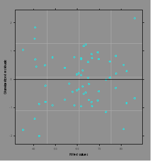
plot.design(grr.groupedData)
#Main effects plot for the groupedData object
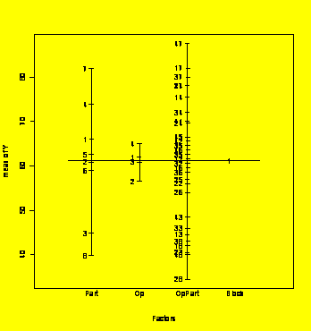
plot(grr.lme,form=resid(.)~fitted(.)|Op,abline=0)
#Plots residuals vs. fitted values by Op with 0 reference line.
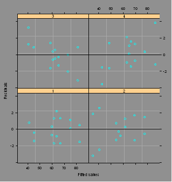
plot(grr.lme,form=resid(.)~fitted(.)|Part,abline=0)
#Plots residuals vs. fitted values by Part ...
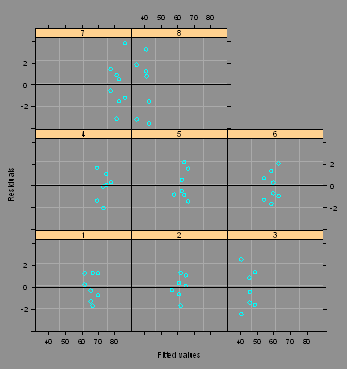
interaction.plot(Op,Part,Y)
#Interaction plot
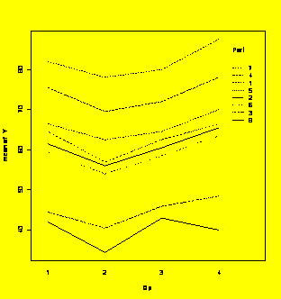
qqnorm(resid(grr.lme));
qqline(resid(grr.lme))
#Residuals normal plot
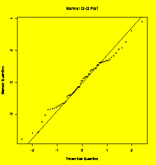
### Example 7.7
(p. 249) Analysis
of a nested design.
Batch=c(1,1,1,1,1,1,1,1,2,2,2,2,2,2,2,2,3,3,3,3,3,3,3,3,1,1,1,1,1,1,1,1,2,2,2,2,2,2,2,2,3,3,3,3,3,3,3,3)
#or use
Batch=gl(3,8,48)
Tote=c(1,1,2,2,3,3,4,4,1,1,2,2,3,3,4,4,1,1,2,2,3,3,4,4,1,1,2,2,3,3,4,4,1,1,2,2,3,3,4,4,1,1,2,2,3,3,4,4)
#or use
Tote=gl(4,2,48)
Cup=c(1,2,1,2,1,2,1,2,1,2,1,2,1,2,1,2,1,2,1,2,1,2,1,2,1,2,1,2,1,2,1,2,1,2,1,2,1,2,1,2,1,2,1,2,1,2,1,2)
#or use
Cup=gl(2,1,48)
Y=c(12.8,12.8,13,12.9,13.5,13.5,12.9,13.2,11.2,11.2,12.3,12.3,10.7,10.4,11.8,12.1,11.5,11.5,11.3,11.3,
11.6,11.4,11.2,11.1,12.5,12.2,13,12.8,13.5,13.4,12.5,12.7,11.3,11,12.4,12,10.5,10.9,11.5,11.8,11.7,11.3,
11.5,11.4,11.7,11.2,11,11.2)
Batch=factor(Batch)
Tote =
factor(Tote)
Cup=factor(Cup)
Y.aov=aov(Y~1+Error(Batch/
Tote/
Cup))
#Fully nested random factors
summary(Y.aov)
Error:
Batch
Df Sum Sq Mean Sq F value Pr(>F)
Residuals
2 25.183
12.592
Error:
Batch:Tote
Df Sum Sq Mean Sq F value Pr(>F)
Residuals
9 8.1544
0.9060
Error:
Batch:Tote:Cup
Df Sum Sq Mean Sq F value Pr(>F)
Residuals
12 0.43250
0.03604
Error:
Within
Df Sum Sq Mean Sq F value Pr(>F)
Residuals
24 0.86500 0.03604
### Now use lme()
to
extract the variance components:
Block=rep(1,48)
Homogeneity.dataframe=data.frame(Batch,Tote,Cup,Y,Block)
library(nlme)
Homogeneity.groupedData=groupedData(Y~1|Block,Homogeneity.dataframe)
Homogeneity.lme=lme(Y~1,data=Homogeneity.groupedData,random=~1|Batch/Tote/Cup)
VarCorr(Homogeneity.lme)
Variance
StdDev
Batch
=
pdLogChol(1)
(Intercept)
0.7297169665 0.85423473
Tote
=
pdLogChol(1)
(Intercept)
0.2176946855 0.46657763
Cup
=
pdLogChol(1)
(Intercept)
0.0004155194 0.02038429
Residual
0.0357570961 0.18909547
### Example 7.8
(p. 254)
Power calculation for a 3x5 fixed-effects factorial design.
Falpha =
qf(0.95,2,30)
Power =
pf(Falpha,2,30,ncp=20.8)
Power
#Display the result
[1]
0.02079381
### Alternative
solution
combines two steps.
Power =
1-pf(qf(0.95,2,30),2,30,ncp=20.8)
Power
[1]
0.9792062
### Example 7.9
(p. 255)
Another power calculation for the 3x5 factorial design.
Power =
1-pf(qf(0.95,4,30),4,30,ncp=12.5)
Power
[1]
0.7484825
### Example 7.10
(p. 256)
Power calculation for a random effect.
Falpha =
qf(0.95,7,32)
E.FA =
1+5*(30/50)^2
Power =
pf(E.FA/Falpha,32,7)
Power
[1]
0.5733428
Power
#################################################################################
#
CHAPTER 8: Linear Regression
#################################################################################
### Example 8.14
(p. 299)
Linear regression analysis.
### Note: There
are only
five points in this data set, so some of the graphs are pretty pointless
### but the
methods shown
are still valid.
x=c(1,2,6,8,8)
y=c(3,7,14,18,23)
y.x=lm(y~x)
#Fits y as a linear function of x
plot(x,y);abline(y.x)
#Creates the scatter plot with fitted line
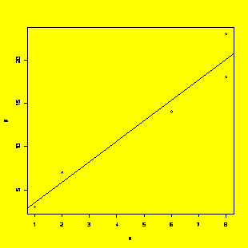
summary(y.x)
#Complete summary of the model
Call:
lm(formula
= y ~ x)
Residuals:
1
2
3
4 5
-0.5455
1.0909 -1.3636 -2.0909 2.9091
Coefficients:
Estimate Std. Error t value Pr(>|t|)
(Intercept)
1.1818 2.0356 0.581
0.60226
x
2.3636 0.3501 6.751 0.00664 **
---
Signif.
codes: 0 `***' 0.001 `**' 0.01 `*' 0.05 `.' 0.1 ` ' 1
Residual
standard error: 2.322 on 3 degrees of freedom
Multiple
R-Squared: 0.9382, Adjusted R-squared: 0.9176
F-statistic:
45.57 on 1 and 3 DF, p-value: 0.006639
anova(y.x)
#ANOVA table
Analysis
of Variance Table
Response:
y
Df Sum Sq Mean Sq F value Pr(>F)
x
1 245.818 245.818 45.573 0.006639 **
Residuals
3 16.182
5.394
---
Signif.
codes: 0 `***' 0.001 `**' 0.01 `*' 0.05 `.' 0.1 ` ' 1
### The following
functions
provide access to other output from the model:
fitted.values(y.x)
#Vector of fitted values (y-hat)
1
2
3
4 5
3.545455
5.909091 15.363636 20.090909 20.090909
residuals(y.x)
#Vector of residuals
1
2
3
4 5
-0.5454545
1.0909091 -1.3636364 -2.0909091 2.9090909
coefficients(y.x)
#Vector of regression coefficients
(Intercept)
x
1.181818 2.363636
### Resdiduals
diagnostic
plots:
par(mfrow=c(2,2))
plot.lm(y.x)
#Creates four diagnostic plots

par(mfrow=c(1,1))
hist(residuals(y.x))
#Creates histogram of the residuals
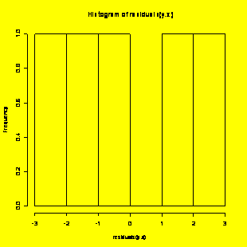
plot(fitted.values(y.x),residuals(y.x))
#Plot of residuals (y-axis) vs. fitted values (x axis)
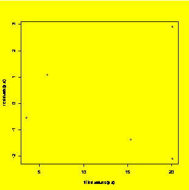
qqnorm(residuals(y.x));
qqline(residuals(y.x)) #Residuals
normal
plot

plot.ts(residuals(y.x))
#Residuals run chart (i.e. time series)
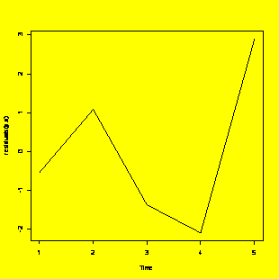
lag.plot(residuals(y.x),lags=1,do.lines=F,labels=F)
#Lag-1 residuals plot
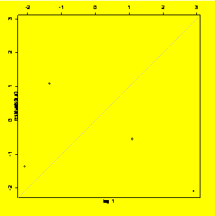
### Examples 8.7
(p. 289) and
8.10 (p. 292) Adding confidence and prediction intervals to the graph.
newx=data.frame(x=seq(min(x),max(x),diff(range(x))/100))
#Vector of new x values for plotting
newy.PL=predict(y.x,newdata=newx,interval="predict")
#Find prediction limits for the new x values
newy.CL=predict(y.x,newdata=newx,interval="confidence")
#Find confidence limits for the new x values
matplot(newx$x,cbind(newy.PL,newy.CL[,-1]),lty=c(1,2,2,3,3),type="l",
xlab="x",ylab="y")
#Matrix plot
title("Polynomial
fit
with 95% confidence and prediction intervals.")
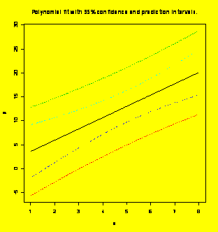
### Example 8.21
(p. 307)
Fitting a third-order polynomial.
x=c(8.9,8.7,0.1,5.4,4.3,2.4,3.4,6.8,2.9,5.6,8.4,0.7,3.8,9.5,0.7)
y=c(126,143,58,50,40,38,41,66,47,65,138,49,56,163,45)
y.x=lm(y~x+I(x^2)+I(x^3))
#The I() notation is required to identify the powers of x
plot(x,y)
#Scatter plot
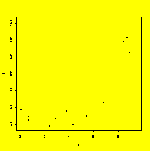
summary(y.x)
#Complete summary of the model
Call:
lm(formula
= y ~ x + I(x^2) + I(x^3))
Residuals:
Min 1Q
Median
3Q Max
-14.549
-5.385 -1.476 5.787 15.397
Coefficients:
Estimate Std. Error t value Pr(>|t|)
(Intercept)
54.7826 7.9324 6.906 2.57e-05 ***
x
-7.4856 8.1378 -0.920
0.377
I(x^2)
0.6507 2.1505
0.303
0.768
I(x^3)
0.1431 0.1513
0.945
0.365
---
Signif.
codes: 0 `***' 0.001 `**' 0.01 `*' 0.05 `.' 0.1 ` ' 1
Residual
standard error: 9.884 on 11 degrees of freedom
Multiple
R-Squared: 0.9595, Adjusted R-squared: 0.9484
F-statistic:
86.76 on 3 and 11 DF, p-value: 6.121e-08
anova(y.x)
#ANOVA table of the model
Analysis
of Variance Table
Response:
y
Df Sum Sq Mean Sq F value
Pr(>F)
x
1 18452.9 18452.9 188.8771 2.852e-08 ***
I(x^2)
1 6889.2 6889.2 70.5152 4.108e-06 ***
I(x^3)
1 87.3 87.3
0.8935 0.3648
Residuals
11 1074.7
97.7
---
Signif.
codes: 0 `***' 0.001 `**' 0.01 `*' 0.05 `.' 0.1 ` ' 1
### Example 8.21,
Figure
8.14 (p. 308) Create the scatter plot with the superimposed fitted
function.
### First (brute
force)
method:
x.forplot=seq(min(x),max(x),diff(range(x))/100)
#Vector of x for plotting
b=coefficients(y.x)
#Cubic equation coefficients
y.forplot=b[1]+b[2]*x.forplot+b[3]*x.forplot^2+b[4]*x.forplot^3
#Vector of fitted y for plotting
plot(x,y,pch=1)
#Make the scatter plot
lines(x.forplot,y.forplot,type="l")
#Add the fitted curve
title("Third-order
polynomial fit to example
data.")
#Add the title
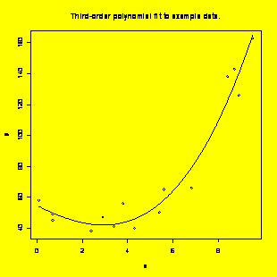
### Example 8.21,
Figure
8.14 (p. 308) Create the scatter plot with the superimposed fitted
function.
### Second method
using
predict():
newx=data.frame(x=seq(min(x),max(x),diff(range(x))/100))
#Vector of new x values for plotting
newy=predict(y.x,newdata=newx)
#Find y-hat for the new x values
plot(x,y);lines(newx$x,newy);title("Third-order
polynomial fit to example data.")
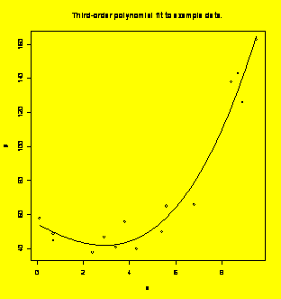
### Example 8.21,
Extra:
Polynomial fit with 95% prediction interval.
newy=predict(y.x,newdata=newx,interval="predict")
#Find the fit and prediction limits
matplot(newx$x,newy,lty=c(1,2,2),type="l",
xlab = "x", ylab="y")
title("Polynomial
fit
with 95% prediction interval.")

### Example 8.27,
Figure
8.26 (p. 323) Matrix plot of response and uncoded predictors.
x1=c(10,10,10,10,100,100,100,100)
x2=c(40,40,50,50,40,40,50,50)
y=c(286,1,114,91,803,749,591,598)
x12=x1*x2
y.x1x2=data.frame(y,x1,x2,x12)
library(lattice)
pairs(y.x1x2)
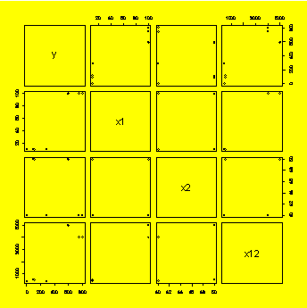
### Example 8.27,
Figure
8.27 (p. 324) Multiple regression of y=f(x1,x2,x12) using uncoded
variables.
MR.Uncoded=lm(y~x1+x2+x12)
summary(MR.Uncoded)
Call:
lm(formula
= y ~ x1 + x2 + x12)
Residuals:
1 2
3 4
5
6 7 8
142.5
-142.5 11.5 -11.5 27.0
-27.0
-3.5 3.5
Coefficients:
Estimate Std. Error t value Pr(>|t|)
(Intercept)
174.7778 520.2841 0.336 0.754
x1
13.2722 7.3214
1.813
0.144
x2
-2.5389 11.4912
-0.221 0.836
x12
-0.1561 0.1617 -0.965
0.389
Residual
standard error: 102.9 on 4 degrees of freedom
Multiple
R-Squared: 0.9403, Adjusted R-squared: 0.8955
F-statistic:
20.99 on 3 and 4 DF, p-value: 0.006554
anova(MR.Uncoded)
Analysis
of Variance Table
Response:
y
Df Sum Sq Mean Sq F value Pr(>F)
x1
1 632250 632250 59.7033 0.001511 **
x2
1 24753 24753 2.3374 0.201027
x12
1 9870 9870 0.9320
0.389005
Residuals
4 42360
10590
---
Signif.
codes: 0 `***' 0.001 `**' 0.01 `*' 0.05 `.' 0.1 ` ' 1
### Example 8.27,
Figure
8.28 (p. 325) Matrix plot of response and coded predictors.
cx1=(x1-55)/45
#Code the levels of x1 and x2
cx2=(x2-45)/5
cx12=cx1*cx2
y.cx1cx2=data.frame(y,cx1,cx2,cx12)
pairs(y.cx1cx2)
#Matrix plot of y, cx1, cx2, and cx12
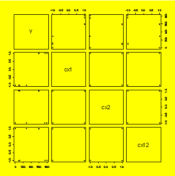
### Example 8.27,
Figure
8.29 (p. 326) Multiple regression of y=f(cx1,cx2,cx12) using coded
variables.
MR.Coded=lm(y~cx1+cx2+cx12)
summary(MR.Coded)
Call:
lm(formula
= y ~ cx1 + cx2 + cx12)
Residuals:
1 2
3 4
5 6
7 8
142.5
-142.5 11.5 -11.5 27.0
-27.0
-3.5 3.5
Coefficients:
Estimate Std. Error t value Pr(>|t|)
(Intercept)
404.12 36.38 11.107 0.000374 ***
cx1
281.13 36.38 7.727 0.001511
**
cx2
-55.62 36.38 -1.529
0.201027
cx12
-35.13 36.38 -0.965
0.389005
---
Signif.
codes: 0 `***' 0.001 `**' 0.01 `*' 0.05 `.' 0.1 ` ' 1
Residual
standard error: 102.9 on 4 degrees of freedom
Multiple
R-Squared: 0.9403, Adjusted R-squared: 0.8955
F-statistic:
20.99 on 3 and 4 DF, p-value: 0.006554
anova(MR.Coded)
Analysis
of Variance Table
Response:
y
Df Sum Sq Mean Sq F
value
Pr(>F)
cx1
1 632250 632250 59.7033 0.001511 **
cx2
1 24753 24753 2.3374 0.201027
cx12
1 9870 9870 0.9320
0.389005
Residuals
4 42359
10590
---
Signif.
codes: 0 `***' 0.001 `**' 0.01 `*' 0.05 `.' 0.1 ` ' 1
### Example 8.29,
Figure
8.30 (p. 328) One-way ANOVA of Life=f(
Life=c(316,330,311,286,258,309,291,363,341,369,354,364,400,381,330,243,298,322,317,273)
plot(Life~
Life.
summary(Life.
Call:
lm(formula = Life ~
Residuals:
Min 1Q Median
3Q Max
-47.6
-19.6 6.9 26.9 34.4
Coefficients:
Estimate Std. Error t value Pr(>|t|)
(Intercept)
300.20 13.68 21.951 2.27e-13 ***
---
Signif.
codes: 0 `***' 0.001 `**' 0.01 `*' 0.05 `.' 0.1 ` ' 1
Residual
standard error: 30.58 on 16 degrees of freedom
Multiple
R-Squared: 0.5416, Adjusted R-squared: 0.4557
F-statistic:
6.302 on 3 and 16 DF, p-value: 0.005005
### Note for
above: R uses
the first treatment group as the reference level, so its coefficient is
zero by
definition.
### This
convention is
different from some other programs where the reference level is the
mean of all
levels.
anova(Life.
Analysis
of Variance Table
Response:
Life
Df Sum Sq Mean Sq F value Pr(>F)
Residuals
16 14962.0
935.1
---
Signif.
codes: 0 `***' 0.001 `**' 0.01 `*' 0.05 `.' 0.1 ` ' 1
par(mfrow=c(2,2))
plot(Life.
### Example 8.30
(p. 331)
Torque = f(Lube,Unit(Lube),Angle) by general linear model.
Unit=gl(6,4,72)
Angle=rep(c(180,270,360,450),18,each=1)
Lube=rep(c("LAU","MIS","SWW"),each=24)
Torque=c(72.1,103.6,129.9,173.9,77.2,122.6,162.9,210.1,61.1,88.9,130.3,157.8,75.8,116.4,153,
198.4,67.3,105.4,154.1,222.5,70.6,107.6,144.9,197.3,70.6,102.1,145.7,193.3,65.2,91.9,123.7,
162.9,58.9,83.5,117.9,156.3,71.4,101.4,158.5,204.2,73.6,111.6,165.1,198.4,63.3,92.6,130.7,
168.7,53.4,80.2,112.4,138,49.4,70.6,100.7,135.4,53.4,80.2,122.2,153.7,50.5,72.8,106.1,129.6,
57.8,85.3,120.4,154.8,51.6,71.7,108.3,147.9)
Unit=factor(Unit)
Lube=factor(Lube)
lnTorque=log(Torque)
library(lattice)
xyplot(lnTorque~Angle|Lube)
### DO NOT USE
THE aov()
SOLUTION. IT USES SEQUENTI
###
lnTorque.aov=aov(lnTorque~Lube*Angle+I(Angle^2)+Error(Lube/
Unit))
#WRONG!!!
###
summary(lnTorque.aov)
lnTorque.lme=lme(fixed=lnTorque~Lube+Angle+Lube:Angle+I(Angle^2),random=~1|Lube/Unit)
summary(lnTorque.lme)
Linear
mixed-effects model fit by REML
Data:
NULL
AIC BIC logLik
-96.83632 -75.09245 58.41816
Random
effects:
Formula:
~1 | Lube
(Intercept)
StdDev:
0.02239666
Formula:
~1 | Unit %in% Lube
(Intercept) Residual
StdDev:
0.08822825 0.04114529
Fixed
effects: lnTorque ~ Lube + Angle + Lube:Angle + I(Angle^2)
Value Std.Error DF t-value p-value
(Intercept)
3.284906 0.07352464 50 44.67762 0.0000
LubeMIS
-0.068217 0.07156538 0 -0.95321
LubeSWW
-0.316573 0.07156538 0 -4.42355
Angle
0.006128 0.00038627 50 15.86412 0.0000
I(Angle^2)
-0.000004 0.00000060 50 -6.48073 0.0000
LubeMIS:Angle
0.000010 0.00011804 50 0.08366 0.9337
LubeSWW:Angle
0.000063 0.00011804 50 0.53705 0.5936
Correlation:
(Intr) LubMIS LubSWW Angle I(A^2) LMIS:A
LubeMIS
-0.487
LubeSWW
-0.487
0.500
Angle
-0.786 0.079
0.079
I(Angle^2)
0.725 0.000 0.000
-0.976
LubeMIS:Angle
0.253 -0.520 -0.260 -0.153
0.000
LubeSWW:Angle
0.253 -0.260 -0.520 -0.153 0.000 0.500
Standardized
Within-Group Residuals:
Min
Q1
Med
Q3 Max
-2.12910987
-0.46837120 0.06757591 0.43190371 2.76024297
Number
of Observations: 72
Number
of Groups:
Lube Unit %in% Lube
3
18
Warning
message:
NaNs
produced in: pt(q, df, lower.tail, log.p)
par(mfrow=c(2,2))
plot(resid(lnTorque.lme)~fitted(lnTorque.lme))
plot(resid(lnTorque.lme)~Lube)
plot(resid(lnTorque.lme)~Angle)
qqnorm(resid(lnTorque.lme));
qqline(resid(lnTorque.lme))
#######################################################################################################
#
CHAPTER 9: Two-Level Factorial Experiments
#######################################################################################################
### Example 9.2
(p. 351)
Analysis of a 2^1 experiment.
x1=c(-1,-1,1,1)
y=c(47,51,21,17)
y.fit=lm(y~x1)
plot(y~x1);abline(y.fit)
summary(y.fit)
Call:
lm(formula
= y ~ x1)
Residuals:
1
2 3 4
-2
2 2 -2
Coefficients:
Estimate Std. Error t value Pr(>|t|)
(Intercept)
34.000 1.414 24.04
0.00173 **
x1
-15.000 1.414 -10.61 0.00877
**
---
Signif.
codes: 0 `***' 0.001 `**' 0.01 `*' 0.05 `.' 0.1 ` ' 1
Residual
standard error: 2.828 on 2 degrees of freedom
Multiple
R-Squared: 0.9825, Adjusted R-squared: 0.9738
F-statistic:
112.5 on 1 and 2 DF, p-value: 0.008772
anova(y.fit)
Analysis
of Variance Table
Response:
y
Df Sum Sq Mean Sq F value Pr(>F)
x1
1 900 900 112.5
0.008772
**
Residuals
2 16
8
---
Signif.
codes: 0 `***' 0.001 `**' 0.01 `*' 0.05 `.' 0.1 ` ' 1
### Example 9.6
(p. 362)
Analysis of a 2^2 experiment with two replicates.
x1=c(-1,-1,1,1,-1,-1,1,1)
x2=c(-1,-1,-1,-1,1,1,1,1)
x12=x1*x2
Y=c(61,63,76,72,41,35,68,64)
Y.data=data.frame(Y,x1,x2)
par(mfrow=c(1,3))
#Plot the data
plot(Y~x1,pch=x2);
abline(lm(Y~x1))
plot(Y~x2,pch=x1);
abline(lm(Y~x2))
plot(Y~x12);
abline(lm(Y~x12))
Y.fit=lm(Y~x1*x2,data=Y.data)
#linear model with main effects and interaction
summary(Y.fit)
#Table of regression coeficients
Call:
lm(formula
= Y ~ x1 * x2, data = Y.data)
Residuals:
1
2 3 4 5 6 7 8
-1
1 2 -2 3 -3 2 -2
Coefficients:
Estimate Std. Error t value Pr(>|t|)
(Intercept)
60.000 1.061 56.569 5.85e-07 ***
x1
10.000 1.061 9.428 0.000706
***
x2
-8.000 1.061 -7.542 0.001655 **
x1:x2
4.000 1.061 3.771 0.019584
*
---
Signif.
codes: 0 `***' 0.001 `**' 0.01 `*' 0.05 `.' 0.1 ` ' 1
Residual
standard error: 3 on 4 degrees of freedom
Multiple
R-Squared: 0.9756, Adjusted R-squared: 0.9573
F-statistic:
53.33 on 3 and 4 DF, p-value: 0.001106
anova(Y.fit)#ANOVA
table
Analysis
of Variance Table
Response:
Y
Df Sum Sq Mean Sq F value Pr(>F)
x1
1 800 800 88.889
0.0007056 ***
x2
1 512 512 56.889
0.0016552 **
x1:x2
1 128 128 14.222
0.0195835
*
Residuals
4 36
9
---
Signif.
codes: 0 `***' 0.001 `**' 0.01 `*' 0.05 `.' 0.1 ` ' 1
Y.diagnostics=data.frame(Y,x1,x2,residuals(Y.fit),predict(Y.fit))
#Collect up the data, residuals, and fits
Y.diagnostics
Y
x1 x2
residuals.Y.fit. predict.Y.fit.
1
61 -1
-1
-1
62
2
63 -1
-1
1
62
3
76 1
-1
2
74
4
72 1
-1
-2
74
5
41 -1
1
3
38
6
35 -1
1
-3
38
7
68 1
1
2
66
8
64 1
1
-2
66
par(mfrow=c(2,2))
#Prep for 2x2 matrix of diagnostic plots
plot(Y.fit)
#Default diagnostic plots
### Example 9.7
(p. 367)
Refining the model for a 2^3 design.
A=c(1,1,-1,1,1,-1,-1,-1)
B=c(-1,1,-1,-1,1,-1,1,1)
C=c(-1,1,-1,1,-1,1,-1,1)
Y=c(91,123,68,131,85,87,64,57)
par(mfrow=c(2,3))
#Graphs: two rows, three columns
AB=A*B;AC=A*C;BC=B*C
#Interactions
plot(Y~A);abline(lm(Y~A));plot(Y~B);abline(lm(Y~B));plot(Y~C);abline(lm(Y~C))
#Plot the main effects
plot(Y~AB);abline(lm(Y~AB));plot(Y~AC);abline(lm(Y~AC));plot(Y~BC);abline(lm(Y~BC))
#... and the interactions
Y.fit.0=lm(Y~A*B*C)
#Fits the full model
summary(Y.fit.0)
Call:
lm(formula
= Y ~ A * B * C)
Residuals:
Coefficients:
Estimate Std. Error t value Pr(>|t|)
(Intercept)
88.25
NA NA
NA
A
19.25
NA NA
NA
B
-6.00
NA NA
NA
C
11.25
NA NA
NA
A:B
2.50
NA NA
NA
A:C
8.25
NA NA
NA
B:C
-3.50
NA NA
NA
A:B:C
3.00
NA NA
NA
Residual
standard error:
Multiple
R-Squared: 1,
Adjusted
R-squared:
F-statistic:
anova(Y.fit.0)
Analysis
of Variance Table
Response:
Y
Df Sum Sq Mean Sq F value Pr(>F)
A
1 2964.5
2964.5
B
1 288.0
288.0
C
1 1012.5
1012.5
A:B
1 50.0
50.0
A:C
1 544.5
544.5
B:C
1 98.0
98.0
A:B:C
1 72.0
72.0
Residuals
0 0.0
Y.fit.1=lm(Y~A*B*C-
A:B:C)
#Drops the ABC interaction
Y.fit.2=lm(Y~A*B*C-A:B:C-A:B)
Y.fit.3=lm(Y~A*B*C-
A:B:C-A:B-
B:C)
#or equivalently: Y.fit.3=lm(Y~A+B+C+A:C)
Y.fit.4=lm(Y~A+C+A:C)
Y.fit.5=lm(Y~A+C)
Y.fit.6=lm(Y~A)
Y.fit.7=lm(Y~1)
#Model constant (mean) only
anova(Y.fit.0,Y.fit.1,Y.fit.2,Y.fit.3,Y.fit.4,Y.fit.5,Y.fit.6,Y.fit.7)
#Compare all eight models
Analysis
of Variance Table
Model
1: Y ~ A * B * C
Model
2: Y ~ A * B * C - A:B:C
Model
3: Y ~ A * B * C - A:B:C - A:B
Model
4: Y ~ A * B * C - A:B:C - A:B - B:C
Model
5: Y ~ A + C + A:C
Model
6: Y ~ A + C
Model
7: Y ~ A
Model
8: Y ~ 1
Res.Df RSS Df Sum of Sq F Pr(>F)
1
0
0.0
2
1 72.0 -1
-72.0
3
2 122.0 -1
-50.0
4
3 220.0 -1
-98.0
5
4 508.0 -1
-288.0
6
5 1052.5 -1
-544.5
7
6 2065.0 -1
-1012.5
8
7 5029.5 -1 -2964.5
### Example 9.10
(p. 379)
Analysis of a 2^5 design.
Y=c(226,150,284,190,287,149,53,232,221,-30,76,270,59,-32,142,121,-43,200,123,137,1,
-51,187,265,233,217,71,187,207,40,179,266)
A=c(1,-1,-1,1,1,-1,1,1,-1,1,1,1,1,1,-1,1,-1,1,1,-1,-1,-1,1,-1,-1,-1,1,-1,1,-1,-1,-1)
B=c(1,1,1,1,1,-1,-1,1,1,-1,-1,1,-1,-1,-1,-1,-1,1,-1,-1,-1,-1,1,1,1,1,-1,1,1,-1,-1,1)
C=c(-1,1,1,1,1,-1,1,-1,-1,1,-1,1,1,1,-1,-1,1,1,-1,-1,1,1,-1,1,-1,-1,-1,1,-1,1,-1,-1)
D=c(-1,-1,1,-1,-1,-1,1,1,1,1,1,1,-1,-1,1,-1,1,1,1,1,-1,-1,-1,-1,1,-1,-1,1,1,1,-1,-1)
E=c(-1,1,-1,1,-1,1,-1,1,-1,1,1,-1,-1,1,-1,-1,1,1,-1,1,-1,1,1,-1,1,1,1,1,-1,-1,-1,-1)
Y.fit=lm(Y~A+B+C+D+E+A:B+A:C+A:D+A:E+B:C+B:D+B:E+C:D+C:E+D:E)
summary(Y.fit)
Call:
lm(formula
= Y ~ A + B + C + D + E + A:B + A:C + A:D + A:E +
B:C + B:D + B:E + C:D + C:E + D:E)
Residuals:
Min 1Q
Median
3Q Max
-34.5000
-6.4219 -0.4375 9.0625 32.5625
Coefficients:
Estimate Std. Error t value Pr(>|t|)
(Intercept)
144.28125 3.39577 42.489 < 2e-16 ***
A
-4.28125 3.39577 -1.261
0.225471
B
82.09375 3.39577 24.175 5.05e-14 ***
C
-29.90625 3.39577 -8.807 1.56e-07 ***
D
1.46875 3.39577 0.433
0.671134
E
-27.21875 3.39577 -8.015 5.41e-07 ***
A:B
2.78125 3.39577 0.819
0.424799
A:C
14.53125 3.39577 4.279 0.000575 ***
A:D
-0.09375 3.39577 -0.028
0.978316
A:E
-1.03125 3.39577 -0.304
0.765280
B:C
32.65625 3.39577 9.617 4.72e-08 ***
B:D
1.40625 3.39577 0.414
0.684286
B:E
0.34375 3.39577 0.101
0.920626
C:D
4.28125
3.39577 1.261 0.225471
C:E
-15.78125 3.39577 -4.647 0.000268 ***
D:E
5.46875 3.39577 1.610
0.126847
---
Signif.
codes: 0 `***' 0.001 `**' 0.01 `*' 0.05 `.' 0.1 ` ' 1
Residual
standard error: 19.21 on 16 degrees of freedom
Multiple
R-Squared: 0.9819, Adjusted R-squared: 0.9648
F-statistic:
57.7 on 15 and 16 DF, p-value: 4.702e-11
anova(Y.fit)
Analysis
of Variance Table
Response:
Y
Df Sum Sq Mean Sq F value
Pr(>F)
A
1 587 587
1.5895
0.2254709
B
1 215660 215660 584.4452 5.052e-14 ***
C
1 28620 28620 77.5617 1.560e-07 ***
D
1 69
69
0.1871 0.6711342
E
1 23708 23708 64.2481 5.408e-07 ***
A:B
1 248 248 0.6708
0.4247991
A:C
1 6757 6757 18.3117 0.0005750 ***
A:D
1 0.2812 0.2812 0.0008 0.9783163
A:E
1 34
34
0.0922 0.7652801
B:C
1 34126 34126 92.4818 4.718e-08 ***
B:D
1 63
63
0.1715 0.6842859
B:E
1 4
4 0.0102 0.9206265
C:D
1 587 587 1.5895
0.2254709
C:E
1 7970 7970 21.5976 0.0002683 ***
D:E
1 957 957 2.5936
0.1268468
Residuals
16 5904
369
---
Signif.
codes: 0 `***' 0.001 `**' 0.01 `*' 0.05 `.' 0.1 ` ' 1
par(mfrow=c(2,2))
plot(Y.fit)
#Default residuals plots
par(mfrow=c(1,1))
coeff=coefficients(Y.fit)[
qqnorm(coeff,main="Coefficients
Normal
Plot");qqline(coeff) #
resid=residuals(Y.fit)
plot(resid,type="b");xref=c(1,length(resid));yref=c(0,0);lines(xref,yref)
#Residuals run chart
old.par =
par(no.readonly =
TRUE)
par(mfrow=c(1,5),bty="n",yaxt="n")
#Five plots in one row
plot(resid~A);lines(c(-1,1),c(0,0))
#Residuals versus A
plot(resid~B,ylab="");lines(c(-1,1),c(0,0))
plot(resid~C,ylab="");lines(c(-1,1),c(0,0))
plot(resid~D,ylab="");lines(c(-1,1),c(0,0))
plot(resid~E,ylab="");lines(c(-1,1),c(0,0))
par(old.par)
par(mfrow=c(1,5),xaxt="n",bty="n")
#Five plots in one row
plot(aggregate(Y,list(A),mean),type="b",xlab="A",ylab="Y",ylim=c(min(Y),max(Y)))
#Main effects plots
plot(aggregate(Y,list(B),mean),type="b",xlab="B",ylab="",ylim=c(min(Y),max(Y)))
plot(aggregate(Y,list(C),mean),type="b",xlab="C",ylab="",ylim=c(min(Y),max(Y)))
plot(aggregate(Y,list(D),mean),type="b",xlab="D",ylab="",ylim=c(min(Y),max(Y)))
plot(aggregate(Y,list(E),mean),type="b",xlab="E",ylab="",ylim=c(min(Y),max(Y)))
par(old.par)
#Restore old graphics parameters
### Example 9.12
(p. 393)
Power calculation for a 2^k design.
power=function(k,r,delta,sigma)
#Find the power for a 2^k design with r replicates
{
N=r*2^k
#Total number of runs
lambda=N/2/2*(delta/
sigma)^2
#Noncentrality parameter
dfmodel=k+k*(k-1)/2
#Main effects and two factor interactions only
dferror=N-1-
dfmodel
#Errror degrees of freedom
Falpha=qf(0.95,1,dferror)
#F(alpha=0.05) assumed
pf(Falpha,1,dferror,lambda,lower.tail=F
}
power(4,6,400,800)
#Gives the answer to the example
[1]
0.677884
### Example 9.13
(p. 394)
Sample size calculation for a 2^k design.
r=c(
P=power(4,r,400,800)
#Find the powers associated with r
plot(P~r);lines(c(1,15),c(0.90,0.90))
#Use plot to find min r that gives power > 0.90
power(4,11,400,800)
#Exact power for r=11 replicates
[1]
0.909437
### Example 9.17
(p. 397)
Find the number of replicates to quantify a coefficient.
replicates=function(k,delta,sigma)
#k is the number of variables in the 2^k experiment
{
dfmodel=k+k*(k-1)/2
#Main effects and two-factor interactions
RHS=(1.96*sigma/
delta)^2/2^k
#For priming the loop, will always give low r
r=trunc(RHS)
#Conservative integer starting point
while
(r<RHS)
#while (r is too small)
{
r=r+1
#Increment r
dferror=r*2^k-1-
dfmodel
#New value
RHS=(-qt(0.025,dferror)*sigma/delta)^2/2^k
#Assumes alpha = 0.05
}
r
#Report the result
}
replicates(3,20,80)
#The answer in the book, r=8, is just barely small
#because (r = 8) < (RHS = 8.08). The right answer is
#r=9, as this function confirms.
[1]
9
######################################################################################################################
### The function
TLFF()
below creates two-level balanced full factorial 2^k experiment designs
for 2 to
7 factors with
### two-factor
interactions. Use rbind() to replicate the design and use subset() to
create
the fractional factorial
### designs.
### Example:
Create and
analyze a 2^4 full factorial design with three replicates.
des.mat=TLFF(4)
#Create the 2^4 full-factorial design
des.mat
A
B
C D AB AC AD BC BD CD
1
-1 -1 -1 -1 1 1 1 1 1 1
2
-1 -1 -1 1 1 1 -1 1 -1 -1
3
-1 -1 1 -1 1 -1 1 -1 1 -1
4
-1 -1 1 1 1 -1 -1 -1 -1 1
5
-1 1 -1 -1 -1 1 1 -1 -1 1
6
-1 1 -1 1 -1 1 -1 -1 1 -1
7
-1 1 1 -1 -1 -1 1 1 -1 -1
8
-1 1 1 1 -1 -1 -1 1 1 1
9
1 -1 -1 -1 -1 -1 -1 1 1 1
10
1 -1 -1 1 -1 -1 1 1 -1 -1
11
1 -1 1 -1 -1 1 -1 -1 1 -1
12
1 -1 1 1 -1 1 1 -1 -1 1
13
1 1 -1 -1 1 -1 -1 -1 -1 1
14
1 1 -1 1 1 -1 1 -1 1 -1
15
1 1 1 -1 1 1 -1 1 -1 -1
16
1 1 1 1 1 1 1 1 1
1
cor(des.mat)
#Check the correlation matrix
A
B C D AB AC AD
BC BD CD
A
1 0 0 0 0 0 0 0 0 0
B
0 1 0 0 0 0 0 0 0 0
C
0 0 1 0 0 0 0 0 0 0
D
0 0 0 1 0 0 0 0 0 0
AB
0 0 0 0 1 0 0 0 0 0
AC
0 0 0 0 0 1 0 0 0 0
AD
0 0 0 0 0 0 1 0 0 0
BC
0 0 0 0 0 0 0 1 0 0
BD
0 0 0 0 0 0 0 0 1 0
CD
0 0 0 0 0 0 0 0 0 1
des.mat=rbind(des.mat,des.mat,des.mat)
#Three replicates
Block=gl(3,16,48)
#Block identifier
Y=rnorm(48)
#Create a column of response data
Y.des.mat=cbind(des.mat,Block,Y)
#Bind the design matrix, block identifier, and response
Y.fit=lm(Y~Block+A*B*C,data=Y.des.mat)
#Create the model
summary(Y.fit)
Call:
lm(formula
= Y ~ Block + A * B * C, data = Y.des.mat)
Residuals:
Min 1Q
Median
3Q Max
-1.49864
-0.56533 -0.03205 0.50933 1.54858
Coefficients:
Estimate Std. Error t value Pr(>|t|)
(Intercept)
-0.420217 0.199397 -2.107 0.0417 *
Block2
0.363708 0.281991 1.290
0.2049
Block3
0.312395 0.281991 1.108
0.2749
A
-0.165889 0.115122 -1.441 0.1578
B
-0.006415 0.115122 -0.056 0.9559
C
0.064719 0.115122 0.562
0.5773
A:B
-0.291043 0.115122 -2.528 0.0157 *
A:C
-0.220582 0.115122 -1.916 0.0629 .
B:C
0.034265 0.115122 0.298
0.7676
A:B:C
-0.171697 0.115122 -1.491 0.1441
---
Signif.
codes: 0 `***' 0.001 `**' 0.01 `*' 0.05 `.' 0.1 ` ' 1
Residual
standard error: 0.7976 on 38 degrees of freedom
Multiple
R-Squared: 0.3056, Adjusted R-squared: 0.1411
F-statistic:
1.858 on 9 and 38 DF, p-value: 0.08914
#######################################################################################################################
TLFF = function(k)
#The function
TLFF()
creates two-level balanced full factorial 2^k experiment designs for 2
to 7
factors with
#two-factor
interactions.
Use rbind() to replicate the design and use subset() to create the
fractional
factorial
#designs. See
also
ffDesMatrix(BHH2) and ffFullMatrix(BHH2).
#By PGMathews,
21March05,
paul@mmbstatistical.com.
{
if (k<2 ||
k>7)
print("Error: k out of range.");return
N=2^k
#Number of runs: N = 2^k
A=rep(c(-1,1),1,each=N/2)
#N/2 -1's followed by N/2 1's
B=rep(c(-1,1),2,each=N/4)
AB=A*B
#AB interaction
design.matrix=data.frame(A,B,AB)
#Combine in a data.frame
if
(k>2)
#Then add third variable (C)
{
C=rep(c(-1,1),4,each=N/8)
AC=A*C; BC=B*C
design.matrix=data.frame(A,B,C,AB,AC,BC)
}
if
(k>3)
#Then add fourth variable (D)
{
D=rep(c(-1,1),8,each=N/16)
AD=A*D;
BD=B*D; CD=C*D
design.matrix=data.frame(A,B,C,D,AB,AC,AD,BC,BD,CD)
}
if
(k>4)
#Then add fifth variable (E)
{
E=rep(c(-1,1),16,each=N/32)
AE=A*E;
BE=B*E; CE=C*E; DE=D*E
design.matrix=data.frame(A,B,C,D,E,AB,AC,AD,AE,BC,BD,BE,CD,CE,DE)
}
if
(k>5)
#Then add sixth variable (F)
{
F=rep(c(-1,1),32,each=N/64)
AF=A*F;BF=B*F;CF=C*F;DF=D*F;EF=E*F
design.matrix=data.frame(A,B,C,D,E,F,AB,AC,AD,AE,AF,BC,BD,BE,BF,CD,CE,CF,DE,DF,EF)
}
if
(k>6)
#Then add seventh variable (G)
{
G=rep(c(-1,1),64,each=N/128)
AG=A*G;BG=B*G;CG=C*G;DG=D*G;EG=E*G;FG=F*G
design.matrix=data.frame(A,B,C,D,E,F,G,AB,AC,AD,AE,AF,AG,BC,BD,BE,BF,BG,CD,CE,CF,CG,DE,DF,DG,EF,EG,FG)
}
design.matrix
}
#End function
############################################################################################################
############################################################################################################
#
CHAPTER 10: Fractional-Factorial Designs
############################################################################################################
### Example 10.5
(p. 419)
Analysis of a 2^(5-1) half-fractional factorial experiment.
### Start with
the data
from Example 9.10:
Y=c(226,150,284,190,287,149,53,232,221,-30,76,270,59,-32,142,121,-43,200,123,137,1,
-51,187,265,233,217,71,187,207,40,179,266)
A=c(1,-1,-1,1,1,-1,1,1,-1,1,1,1,1,1,-1,1,-1,1,1,-1,-1,-1,1,-1,-1,-1,1,-1,1,-1,-1,-1)
B=c(1,1,1,1,1,-1,-1,1,1,-1,-1,1,-1,-1,-1,-1,-1,1,-1,-1,-1,-1,1,1,1,1,-1,1,1,-1,-1,1)
C=c(-1,1,1,1,1,-1,1,-1,-1,1,-1,1,1,1,-1,-1,1,1,-1,-1,1,1,-1,1,-1,-1,-1,1,-1,1,-1,-1)
D=c(-1,-1,1,-1,-1,-1,1,1,1,1,1,1,-1,-1,1,-1,1,1,1,1,-1,-1,-1,-1,1,-1,-1,1,1,1,-1,-1)
E=c(-1,1,-1,1,-1,1,-1,1,-1,1,1,-1,-1,1,-1,-1,1,1,-1,1,-1,1,1,-1,1,1,1,1,-1,-1,-1,-1)
Y.full.factorial=data.frame(Y,A,B,C,D,E)
#Catch all of the data
rm(Y,A,B,C,D,E)
#Clean up
Y.half.fraction=subset(Y.full.factorial,
(A*B*C*D==E))
#Create the subset
attach(Y.half.fraction)
AB=A*B;AC=A*C;AD=A*D;AE=A*E;BC=B*C;BD=B*D;BE=B*E;CD=C*D;CE=C*E;DE=D*E
#Make the interactions
Terms=data.frame(A,B,C,D,E,AB,AC,AD,AE,BC,BD,BE,CD,CE,DE)
cor(Terms)
A
B C D
A
1 0 0 0 0 0 0 0 0 0 0 0
0
0 0
B
0 1 0 0 0 0 0 0 0 0 0 0
0
0 0
C
0 0 1 0 0 0 0 0 0 0 0 0
0
0 0
D
0 0 0 1 0 0 0 0 0 0 0 0
0
0 0
E
0 0 0 0 1 0 0 0 0 0 0 0
0
0 0
AB
0 0 0 0 0 1 0 0 0 0 0 0
0
0 0
AC
0 0 0 0 0 0 1 0 0 0 0 0
0
0 0
AD
0 0 0 0 0 0 0 1 0 0 0 0
0
0 0
AE
0 0 0 0 0 0 0 0 1 0 0 0
0
0 0
BC
0 0 0 0 0 0 0 0 0 1 0 0
0
0 0
BD
0 0 0 0 0 0 0 0 0 0 1 0
0
0 0
BE
0 0 0 0 0 0 0 0 0 0 0 1
0
0 0
CD
0 0 0 0 0 0 0 0 0 0 0 0
1
0 0
CE
0 0 0 0 0 0 0 0 0 0 0 0
0
1 0
DE
0 0 0 0 0 0 0 0 0 0 0 0
0
0 1
Y.fit=lm(Y~A+B+C+D+
summary(Y.fit)
Call:
lm(formula
= Y ~ A + B + C + D + E + AB + AC + AD + AE + BC +
BD + BE + CD + CE + DE)
Residuals:
Coefficients:
Estimate Std. Error t value Pr(>|t|)
(Intercept)
142.5625
NA NA
NA
A
-5.1875
NA NA
NA
B
84.1875
NA NA
NA
C
-30.0625
NA NA
NA
D
1.4375
NA NA
NA
E
-27.5625
NA NA
NA
AB
-1.3125
NA NA
NA
AC
19.6875
NA
NA
NA
AD
-4.8125
NA NA
NA
AE
-2.0625
NA NA
NA
BC
33.5625
NA NA
NA
BD
2.8125
NA NA
NA
BE
-6.6875
NA NA
NA
CD
9.5625
NA NA
NA
CE
-16.1875
NA NA
NA
DE
0.0625
NA NA
NA
Residual
standard error:
Multiple
R-Squared: 1,
Adjusted
R-squared:
F-statistic:
anova(Y.fit)
Analysis
of Variance Table
Response:
Y
Df Sum Sq Mean Sq F value Pr(>F)
A
1 431
431
B
1 113401
113401
C
1 14460
14460
D
1 33
33
E
1 12155
12155
AB
1 28
28
AC
1 6202
6202
AD
1 371
371
AE
1
68
68
BC
1 18023
18023
BD
1 127
127
BE
1 716
716
CD
1 1463
1463
CE
1 4193
4193
DE
1 0.0625
0.0625
Residuals
0 0
coeff=coefficients(Y.fit)[
qqnorm(coeff);qqline(coeff)
#
Y.fit=lm(Y~A+B+C+D+E+AC+BC+CD+CE)
summary(Y.fit)
Call:
lm(formula
= Y ~ A + B + C + D + E + AC + BC + CD + CE)
Residuals:
Min 1Q
Median
3Q Max
-12.000
-8.844 1.375 6.406 13.500
Coefficients:
Estimate Std. Error t value Pr(>|t|)
(Intercept)
142.562 3.692 38.617 2.01e-08 ***
A
-5.188 3.692 -1.405
0.209576
B
84.188 3.692 22.804 4.66e-07 ***
C
-30.062 3.692 -8.143 0.000184 ***
D
1.437 3.692 0.389
0.710438
E
-27.562
3.692 -7.466 0.000298 ***
AC
19.687 3.692 5.333 0.001773
**
BC
33.562 3.692 9.091 9.94e-05
***
CD
9.562 3.692 2.590 0.041198
*
CE
-16.187 3.692 -4.385 0.004644 **
---
Signif.
codes: 0 `***' 0.001 `**' 0.01 `*' 0.05 `.' 0.1 ` ' 1
Residual
standard error: 14.77 on 6 degrees of freedom
Multiple
R-Squared: 0.9924, Adjusted R-squared: 0.9809
F-statistic:
86.8 on 9 and 6 DF, p-value: 1.163e-05
anova(Y.fit)
Analysis
of Variance Table
Response:
Y
Df Sum Sq Mean Sq F value
Pr(>F)
A
1 431 431 1.9745
0.2095758
B
1 113401 113401 520.0370 4.657e-07 ***
C
1 14460 14460 66.3116 0.0001844 ***
D
1 33
33
0.1516 0.7104376
E
1 12155 12155 55.7412 0.0002979 ***
AC
1 6202 6202 28.4394 0.0017733 **
BC
1 18023 18023 82.6509 9.945e-05 ***
CD
1 1463 1463 6.7094 0.0411983
*
CE
1 4193 4193 19.2264 0.0046440 **
Residuals
6 1308
218
---
Signif.
codes: 0 `***' 0.001 `**' 0.01 `*' 0.05 `.' 0.1 ` ' 1
par(mfrow=c(2,2))
plot(Y.fit)
### Example 10.8
(p. 424)
Analysis of NIST sonoluminescence screening experiment in seven
variables.
x1=c(-1,1,-1,1,-1,1,-1,1,-1,1,-1,1,-1,1,-1,1)
x2=c(-1,-1,1,1,-1,-1,1,1,-1,-1,1,1,-1,-1,1,1)
x3=c(-1,-1,-1,-1,1,1,1,1,-1,-1,-1,-1,1,1,1,1)
x4=c(-1,-1,-1,-1,-1,-1,-1,-1,1,1,1,1,1,1,1,1)
x5=c(-1,-1,1,1,1,1,-1,-1,1,1,-1,-1,-1,-1,1,1)
x6=c(-1,1,-1,1,1,-1,1,-1,1,-1,1,-1,-1,1,-1,1)
x7=c(-1,1,1,-1,1,-1,-1,1,-1,1,1,-1,1,-1,-1,1)
Y=c(80.6,66.1,59.1,68.9,75.1,373.8,66.8,79.6,114.3,84.1,68.4,88.1,78.1,327.2,77.6,61.9)
x12=x1*x2;x13=x1*x3;x14=x1*x4;x15=x1*x5;x16=x1*x6;x17=x1*x7
#Create the interactions
x23=x2*x3;x24=x2*x4;x25=x2*x5;x26=x2*x6;x27=x2*x7
x34=x3*x4;x35=x3*x5;x36=x3*x6;x37=x3*x7
x45=x4*x5;x46=x4*x6;x47=x4*x7
x56=x5*x6;x57=x5*x7
x67=x6*x7
X=data.frame(x1,x2,x3,x4,x5,x6,x7,x12,x13,x14,x15,x16,x17,x23,x24,x25,x26,x27,x34,x35,x36,x37,x45,x46,x47,x56,x57,x67)
cor(X)
#Correlation matrix
x1
x2 x3 x4 x5 x6
x7 x12 x13 x14 x15 x16 x17 x23 x24 x25 x26 x27 x34 x35 x36 x37 x45 x46
x47 x56
x57 x67
x1
1 0 0 0 0 0 0
0
0 0 0 0 0
0 0 0 0 0
0 0 0 0 0
0 0 0 0 0
x2
0 1 0 0 0 0 0
0
0 0 0 0 0
0 0 0 0 0
0 0 0 0 0
0 0 0 0 0
x3
0 0 1 0 0 0 0
0
0 0 0 0 0
0 0 0 0 0
0 0 0 0 0
0
0 0 0 0
x4
0 0 0 1 0 0 0
0
0 0 0 0 0
0 0 0 0 0
0 0 0 0 0
0 0 0 0 0
x5
0 0 0 0 1 0 0
0
0 0 0 0 0
0 0 0 0 0
0 0 0 0 0
0 0 0 0 0
x6
0 0 0 0 0 1 0
0
0 0 0 0 0
0 0 0 0 0
0 0 0 0 0
0
0 0 0 0
x7
0 0 0 0 0 0 1
0
0 0 0 0 0
0 0 0 0 0
0 0 0 0 0
0 0 0 0 0
x12
0 0 0 0 0 0 0
1
0 0 0 0 0
0 0 0 0 0
0 0 0 1 0
0 0 1 0 0
x13
0 0 0 0 0 0 0
0
1 0 0 0 0
0 0 0 0 1
0 0 0 0 0
1 0 0 0 0
x14
0 0 0 0 0 0 0
0
0 1 0 0 0
0 0 0 0 0
0 0 1 0 0
0 0 0 1 0
x15
0 0 0 0 0 0 0
0
0 0 1 0 0
0 0 0 1 0
0 0 0 0 0
0 1 0 0 0
x16
0 0 0 0 0 0 0
0
0 0 0 1 0
0 0 1 0 0
1 0 0 0 0
0 0 0 0 0
x17
0 0 0 0 0 0 0
0
0 0 0 0 1
1 0 0 0 0
0 0 0 0 1
0 0 0 0 0
x23
0 0 0 0 0 0 0
0
0 0 0 0 1
1 0 0 0 0
0 0 0 0 1
0 0 0 0 0
x24
0 0 0 0 0 0 0
0
0 0 0 0 0
0 1 0 0 0
0 1 0 0 0
0 0 0 0 1
x25
0 0 0 0 0 0 0
0
0 0 0 1 0
0 0 1 0 0
1 0 0 0 0
0 0 0 0 0
x26
0 0 0 0 0 0 0
0
0 0 1 0 0
0 0 0 1 0
0 0 0 0 0
0 1 0 0 0
x27
0 0 0 0 0 0 0
0
1 0 0 0 0
0 0 0 0 1
0 0 0 0 0
1 0 0 0 0
x34
0 0 0 0 0 0 0
0
0 0 0 1 0
0 0 1 0 0
1 0 0 0 0
0 0 0 0 0
x35
0 0 0 0 0 0 0
0 0
0 0 0 0 0
1 0 0 0 0
1 0 0 0 0
0 0 0 1
x36
0 0 0 0 0 0 0
0
0 1 0 0 0
0 0 0 0 0
0 0 1 0 0
0 0 0 1 0
x37
0 0 0 0 0 0 0
1
0 0 0 0 0
0 0 0 0 0
0 0 0 1 0
0 0 1 0 0
x45
0 0 0 0 0 0 0
0
0 0 0 0 1
1 0 0 0 0
0 0 0 0 1
0 0 0 0 0
x46
0 0 0 0 0 0 0
0
1 0 0 0 0
0 0 0 0 1
0 0 0 0 0
1 0 0 0 0
x47
0 0 0 0 0 0 0
0
0 0 1 0 0
0 0 0 1 0
0 0 0 0 0
0 1 0 0 0
x56
0 0 0 0 0 0 0
1
0 0 0 0 0
0 0 0 0 0
0 0 0 1 0
0 0 1 0 0
x57
0 0 0 0 0 0 0
0
0 1 0 0 0
0 0 0 0 0
0 0 1 0 0
0 0 0 1 0
x67
0 0 0 0 0 0 0
0
0 0 0 0 0
0 1 0 0 0
0 1 0 0 0
0 0 0 0 1
Y.fit=lm(Y~x1+x2+x3+x4+x5+x6+x7+x12+x13+x14+x15+x16+x17+x24)
#All other terms are
confounded
summary(Y.fit)
Call:
lm(formula
= Y ~ x1 + x2 + x3 + x4 + x5 + x6 + x7 + x12 + x13 +
x14 + x15 + x16 + x17 + x24)
Residuals:
1 2
3 4
5 6
7 8
9 10
11
12 13
14
15
16
-2.919
2.919 2.919 -2.919 -2.919 2.919 2.919 -2.919
2.919
-2.919 -2.919 2.919 2.919 -2.919 -2.919 2.919
Coefficients:
Estimate Std. Error t value Pr(>|t|)
(Intercept)
110.6062 2.9187 37.895 0.0168
*
x1
33.1063
2.9187 11.343 0.0560 .
x2
-39.3062 2.9187 -13.467 0.0472 *
x3
31.9063 2.9187 10.931 0.0581 .
x4
1.8562 2.9187 0.636
0.6394
x5
3.7438 2.9187 1.283
0.4216
x6
-4.5188
2.9187 -1.548 0.3651
x7
-39.0562 2.9187 -13.381 0.0475 *
x12
-29.7812 2.9187 -10.203 0.0622 .
x13
35.0063 2.9187 11.994 0.0530 .
x14
-5.2437 2.9187 -1.797
0.3233
x15
-0.2813
2.9187 -0.096 0.9388
x16
-8.1688 2.9187 -2.799
0.2185
x17
-31.7313 2.9187 -10.872 0.0584 .
x24
0.8437 2.9187 0.289
0.8209
---
Signif.
codes: 0 `***' 0.001 `**' 0.01 `*' 0.05 `.' 0.1 ` ' 1
Residual
standard error: 11.67 on 1 degrees of freedom
Multiple
R-Squared: 0.999, Adjusted R-squared:
0.9849
F-statistic:
70.74 on 14 and 1 DF, p-value: 0.09296
anova(Y.fit)
Analysis
of Variance Table
Response:
Y
Df Sum Sq Mean Sq F value Pr(>F)
x1
1 17536.4 17536.4 128.6549 0.05598 .
x2
1 24719.7 24719.7 181.3550 0.04719 *
x3
1 16288.1 16288.1 119.4972 0.05808 .
x4
1 55.1 55.1 0.4045
0.63939
x5
1 224.3 224.3 1.6452 0.42157
x6
1 326.7 326.7 2.3969 0.36510
x7
1 24406.3 24406.3 179.0553 0.04749 *
x12
1 14190.8 14190.8 104.1099 0.06219 .
x13
1 19607.0 19607.0 143.8459 0.05296 .
x14
1 440.0 440.0 3.2277 0.32334
x15
1 1.3 1.3
0.0093
0.93884
x16
1 1067.7 1067.7 7.8328 0.21847
x17
1 16110.0 16110.0 118.1900 0.05839 .
x24
1 11.4 11.4 0.0836
0.82085
Residuals
1 136.3
136.3
---
Signif.
codes: 0 `***' 0.001 `**' 0.01 `*' 0.05 `.' 0.1 ` ' 1
Y.fit=lm(Y~x1+x2+x3+x7+x12+x13+x17)
#These are, or are almost, significant
summary(Y.fit)
Call:
lm(formula
= Y ~ x1 + x2 + x3 + x7 + x12 + x13 + x17)
Residuals:
Min
1Q
Median
3Q
Max
-2.330e+01
-8.887e+00 3.331e-16 8.887e+00 2.330e+01
Coefficients:
Estimate Std. Error t value Pr(>|t|)
(Intercept)
110.606 4.204 26.307 4.68e-09 ***
x1
33.106 4.204 7.874 4.89e-05
***
x2
-39.306
4.204 -9.349 1.40e-05 ***
x3
31.906 4.204 7.589 6.37e-05
***
x7
-39.056 4.204 -9.289 1.47e-05 ***
x12
-29.781 4.204 -7.083 0.000104 ***
x13
35.006 4.204 8.326 3.27e-05
***
x17
-31.731 4.204 -7.547 6.63e-05 ***
---
Signif.
codes: 0 `***' 0.001 `**' 0.01 `*' 0.05 `.' 0.1 ` ' 1
Residual
standard error: 16.82 on 8 degrees of freedom
Multiple
R-Squared: 0.9833, Adjusted R-squared: 0.9686
F-statistic:
67.11 on 7 and 8 DF, p-value: 1.784e-06
anova(Y.fit)
Analysis
of Variance Table
Response:
Y
Df Sum Sq Mean Sq F value
Pr(>F)
x1
1 17536.4 17536.4 62.003 4.894e-05 ***
x2
1 24719.7 24719.7 87.401 1.400e-05 ***
x3
1 16288.1 16288.1 57.590 6.372e-05 ***
x7
1 24406.3 24406.3 86.292 1.468e-05 ***
x12
1 14190.8 14190.8 50.174 0.0001037 ***
x13
1 19607.0 19607.0 69.324 3.272e-05 ***
x17
1 16110.0 16110.0 56.959 6.626e-05 ***
Residuals
8 2262.7
282.8
---
Signif.
codes: 0 `***' 0.001 `**' 0.01 `*' 0.05 `.' 0.1 ` ' 1
plot(Y.fit)
### Example 10.10
(p. 430)
Creation of a resolution IV design by folding.
A=c(-1,-1,-1,-1,1,1,1,1)
#Base design: 2^3 in A, B, C
B=c(-1,-1,1,1,-1,-1,1,1)
C=c(-1,1,-1,1,-1,1,-1,1)
D=A*B;E=A*C;F=B*C;G=A*B*C
#Apply the generators
A=c(A,-A);B=c(B,-B);C=c(C,-C);D=c(D,-D);E=c(E,-E);F=c(F,-F);G=c(G,-G)
#Create the fold-over design
AB=A*B;AC=A*C;AD=A*D;AE=A*E;AF=A*F;AG=A*G
#Create the interactions
BC=B*C;BD=B*D;BE=B*E;BF=B*F;BG=B*G
CD=C*D;CE=C*E;CF=C*F;CG=C*G
DE=D*E;DF=D*F;DG=D*G
EF=E*F;EG=E*G
FG=F*G
Terms=data.frame(A,B,C,D,E,F,G,AB,AC,AD,AE,AF,AG,BC,BD,BE,BF,BG,CD,CE,CF,CG,DE,DF,DG,EF,EG,FG)
cor(Terms)
#Inspection of the correlation matrix shows that the fold-over design
is
resolution IV.
A
B C D E F G AB AC
AD AE AF AG BC BD BE BF BG CD CE CF CG DE DF DG EF EG FG
A
1 0 0 0 0 0 0 0 0 0 0 0 0
0
0 0 0 0 0 0 0 0 0
0
0 0 0 0
B
0 1 0 0 0 0 0 0 0 0 0 0 0
0
0 0 0 0 0 0 0 0 0
0
0 0 0 0
C
0 0 1 0 0 0 0 0 0 0 0 0 0
0
0 0 0 0 0 0 0 0 0
0
0 0 0 0
D
0 0 0 1 0 0 0 0 0 0 0 0 0
0
0 0 0 0 0 0 0 0 0
0
0 0 0 0
E
0 0 0 0 1 0 0 0 0 0 0 0 0
0
0 0 0 0 0 0 0 0 0
0
0 0 0 0
F
0 0 0 0 0 1 0 0 0 0 0 0 0
0
0 0 0 0 0 0 0 0 0
0
0 0 0 0
G
0 0 0 0 0 0 1 0 0 0 0 0 0
0
0 0 0 0 0 0 0 0 0
0
0 0 0 0
AB
0 0 0 0 0 0 0 1 0 0 0 0 0
0
0 0 0 0 0 0 0 1 0
0
0 1 0 0
AC
0 0 0 0 0 0 0 0 1 0 0 0 0
0
0 0 0 1 0 0 0 0 0
1
0 0 0 0
AD
0 0 0 0 0 0 0 0 0 1 0 0 0
0
0 0 0 0 0 0 1 0 0
0
0 0 1 0
AE
0 0 0 0 0 0 0 0 0 0 1 0 0
0
0 0 1 0 0 0 0 0 0
0
1 0 0 0
AF
0 0 0 0 0 0 0 0 0 0 0 1 0
0
0 1 0 0 1 0 0 0 0
0
0 0 0 0
AG
0 0 0 0 0 0 0 0 0 0 0 0 1
1
0 0 0 0 0 0 0 0 1
0
0 0 0 0
BC
0 0 0 0 0 0 0 0 0 0 0 0 1
1
0 0 0 0 0 0 0 0 1
0
0 0 0 0
BD
0 0 0 0 0 0 0 0 0 0 0 0 0
0
1 0 0 0 0 1 0 0 0
0
0 0 0 1
BE
0 0 0 0 0 0 0 0 0 0 0 1 0
0
0 1 0 0 1 0 0 0 0
0
0 0 0 0
BF
0 0 0 0 0 0 0 0 0 0 1 0 0
0
0 0 1 0 0 0 0 0 0
0
1 0 0 0
BG
0 0 0 0 0 0 0 0 1 0 0 0 0
0
0 0 0 1 0 0 0 0 0
1
0 0 0 0
CD
0 0 0 0 0 0 0 0 0 0 0 1 0
0
0 1 0 0 1 0 0 0 0
0
0 0 0 0
CE
0 0 0 0 0 0 0 0 0 0 0 0 0
0
1 0 0 0 0 1 0 0 0
0
0 0 0 1
CF
0 0 0 0 0 0 0 0 0 1 0 0 0
0
0 0 0 0 0 0 1 0 0
0
0 0 1 0
CG
0 0 0 0 0 0 0 1 0 0 0 0 0
0
0 0 0 0 0 0 0 1 0
0
0 1 0 0
DE
0 0 0 0 0 0 0 0 0 0 0 0 1
1
0 0 0 0 0 0 0 0 1
0
0 0 0 0
DF
0 0 0 0 0 0 0 0 1 0 0 0 0
0
0 0 0 1 0 0 0 0 0
1
0 0 0 0
DG
0 0 0 0 0 0 0 0 0 0 1 0 0
0
0 0 1 0 0 0 0 0 0
0
1 0 0 0
EF
0 0 0 0 0 0 0 1 0 0 0 0 0
0
0 0 0 0 0 0 0 1 0
0
0 1 0 0
EG
0 0 0 0 0 0 0 0 0 1 0 0 0
0
0 0 0 0 0 0 1 0 0
0
0 0 1 0
FG
0 0 0 0 0 0 0 0 0 0 0 0 0
0
1 0 0 0 0 1 0 0 0
0
0 0 0 1
### Example 10.11
(p. 433)
Power calculation for a fractional factorial design with blocking.
### Start from
the power
function created in Example 9.12 and make appropriate modifications:
power=function(k,p,r,dfmodel,delta,sigma)
#Find the power for a 2^(k-p) design with r replicates in blocks
{
N=r*2^(k-
p)
#Total number of runs
lambda=N/2/2*(delta/
sigma)^2
#Noncentrality parameter
dferror=N-1-
dfmodel
#Errror degrees of freedom
Falpha=qf(0.95,1,dferror)
#F(alpha=0.05) assumed
pf(Falpha,1,dferror,lambda,lower.tail=F
}
power(5,2,4,10,100,80)
#dfmodel =
5
+
2 + 3
# (main effects)
+
(interactions) + (blocks)
[1]
0.9206987
### Example: Use
the TLFF()
function from Chapter 9 to create and analyze an experiment using two
replicates of a 2^(7-4)
###
sixteenth-fractional
factorial design.
des.mat=TLFF(7)
#Create the 2^7 full-factorial design
des.mat=subset(des.mat,(D==A*B
& E==A*C & F==B*C &
G==A*B*C))
#Use the generators to isolate the sixteenth fraction
cor(des.mat)
#Check the correlation matrix
A
B C D E F G AB
AC AD AE AF AG BC BD BE BF BG CD CE CF CG DE DF DG EF EG FG
A
1 0 0 0 0 0 0 0 0 0 0 0 0
0
1 0 0 0 0 1 0 0 0
0
0 0 0 1
B
0 1 0 0 0 0 0 0 0 1 0 0 0
0
0 0 0 0 0 0 1 0 0
0
0 0 1 0
C
0 0 1 0 0 0 0 0 0 0 1 0 0
0
0 0 1 0 0 0 0 0 0
0
1 0 0 0
D
0 0 0 1 0 0 0 1 0 0 0 0 0
0
0 0 0 0 0 0 0 1 0
0
0 1 0 0
E
0 0 0 0 1 0 0 0 1 0 0 0 0
0
0 0 0 1 0 0 0 0 0
1
0 0 0 0
F
0 0 0 0 0 1 0 0 0 0 0 0 1
1
0 0 0 0 0 0 0 0 1
0
0 0 0 0
G
0 0 0 0 0 0 1 0 0 0 0 1 0
0
0 1 0 0 1 0 0 0 0
0
0 0 0 0
AB
0 0 0 1 0 0 0 1 0 0 0 0 0
0
0 0 0 0 0 0 0 1 0
0
0 1 0 0
AC
0 0 0 0 1 0 0 0 1 0 0 0 0
0
0 0 0 1 0 0 0 0 0
1
0 0 0 0
AD
0 1 0 0 0 0 0 0 0 1 0 0 0
0
0 0 0 0 0 0 1 0 0
0
0 0 1 0
AE
0 0 1 0 0 0 0 0 0 0 1 0 0
0
0 0 1 0 0 0 0 0 0
0
1 0 0 0
AF
0 0 0 0 0 0 1 0 0 0 0 1 0
0
0 1 0 0 1 0 0 0 0
0
0 0 0 0
AG
0 0 0 0 0 1 0 0 0 0 0 0 1
1
0 0 0 0 0 0 0 0 1
0
0 0 0 0
BC
0 0 0 0 0 1 0 0 0 0 0 0 1
1
0 0 0 0 0 0 0 0 1
0
0 0 0 0
BD
1 0 0 0 0 0 0 0 0 0 0 0 0
0
1 0 0 0 0 1 0 0 0
0
0 0 0 1
BE
0 0 0 0 0 0 1 0 0 0 0 1 0
0
0 1 0 0 1 0 0 0 0
0
0 0 0 0
BF
0 0 1 0 0 0 0 0 0 0 1 0 0
0
0 0 1 0 0 0 0 0 0
0
1 0 0 0
BG
0 0 0 0 1 0 0 0 1 0 0 0 0
0
0 0 0 1 0 0 0 0 0
1
0 0 0 0
CD
0 0 0 0 0 0 1 0 0 0 0 1 0
0
0 1 0 0 1 0 0 0 0
0
0 0 0 0
CE
1 0 0 0 0 0 0 0 0 0 0 0 0
0
1 0 0 0 0 1 0 0 0
0
0 0 0 1
CF
0 1 0 0 0 0 0 0 0 1 0 0 0
0
0 0 0 0 0 0 1 0 0
0
0 0 1 0
CG
0 0 0 1 0 0 0 1 0 0 0 0 0
0
0 0 0 0 0 0 0 1 0
0
0 1 0 0
DE
0 0 0 0 0 1 0 0 0 0 0 0 1
1
0 0 0 0 0 0 0 0 1
0
0 0 0 0
DF
0 0 0 0 1 0 0 0 1 0 0 0 0
0
0 0 0 1 0 0 0 0 0
1
0 0 0 0
DG
0 0 1 0 0 0 0 0 0 0 1 0 0
0
0 0 1 0 0 0 0 0 0
0
1 0 0 0
EF
0 0 0 1 0 0 0 1 0 0 0 0 0
0
0 0 0 0 0 0 0 1 0
0
0 1 0 0
EG
0 1 0 0 0 0 0 0 0 1 0 0 0
0
0 0 0 0 0 0 1 0 0
0
0 0 1 0
FG
1 0 0 0 0 0 0 0 0 0 0 0 0
0
1 0 0 0 0 1 0 0 0
0
0 0 0 1
des.mat=rbind(des.mat,des.mat)
#Two replicates
Block=gl(2,8,16)
#Block identifier
Y=rnorm(16)
#Create a column of response data
Y.des.mat=cbind(des.mat,Block,Y)
#Bind the design matrix, block identifier, and response
Y.fit=lm(Y~Block+A+B+C+D+E+F+G,data=Y.des.mat)
#Create the model
summary(Y.fit)
Call:
lm(formula
= Y ~ Block + A + B + C + D + E + F + G, data = Y.des.mat)
Residuals:
Min
1Q
Median
3Q Max
-1.034e+00
-4.459e-01 1.388e-17 4.459e-01 1.034e+00
Coefficients:
Estimate Std. Error t value Pr(>|t|)
(Intercept)
-0.377205 0.335707 -1.124 0.2982
Block2
0.479596 0.474761 1.010
0.3460
A
-0.511302 0.237381 -2.154 0.0682 .
B
0.057109 0.237381 0.241
0.8168
C
-0.206127 0.237381 -0.868 0.4140
D
-0.233388 0.237381 -0.983 0.3583
E
0.284044 0.237381 1.197
0.2704
F
-0.007643 0.237381 -0.032 0.9752
G
-0.265588 0.237381 -1.119 0.3001
---
Signif.
codes: 0 `***' 0.001 `**' 0.01 `*' 0.05 `.' 0.1 ` ' 1
Residual
standard error: 0.9495 on 7 degrees of freedom
Multiple
R-Squared: 0.5912, Adjusted R-squared: 0.124
F-statistic:
1.265 on 8 and 7 DF, p-value: 0.3846
############################################################################################################
#
CHAPTER 11: Response Surface Designs
############################################################################################################
### Example 11.9
(p. 460)
Optimization of lamp lumens as a function of three geometry variables.
Lumens=c(4010,5135,5879,6073,3841,4933,5569,5239,5017,5243,6412,6210,5805,5624,5843,4746,6052,6105,6232,4549,
4080,5006,5438,4903,6129,6234,6860,6794,5780,6053)
A=c(-1,-1,1,1,-1,-1,1,1,0,0,0,0,0,0,0,-1,-1,1,1,-1,-1,1,1,0,0,0,0,0,0,0)
B=c(-1,1,-1,1,0,0,0,0,-1,-1,1,1,0,0,0,-1,1,-1,1,0,0,0,0,-1,-1,1,1,0,0,0)
C=c(0,0,0,0,-1,1,-1,1,-1,1,-1,1,0,0,0,0,0,0,0,-1,1,-1,1,-1,1,-1,1,0,0,0)
Block=gl(2,15,30)
Run=c(9,8,10,12,3,15,6,14,13,5,1,11,4,7,2,26,16,27,19,23,30,22,18,17,25,20,29,21,24,28)
AB=A*B;AC=A*C;BC=B*C;AA=A*A;BB=B*B;CC=C*C
Terms=data.frame(A,B,C,AB,AC,BC,AA,BB,CC)
cor(Terms)
A
B C AB AC
BC
AA
BB CC
A
1 0 0 0 0 0 0.00000000 0.00000000
0.00000000
B
0 1 0 0 0 0 0.00000000 0.00000000
0.00000000
C
0 0 1 0 0 0 0.00000000 0.00000000
0.00000000
AB
0 0 0 1 0 0 0.00000000 0.00000000
0.00000000
AC
0 0 0 0 1 0 0.00000000 0.00000000
0.00000000
BC
0 0 0 0 0 1 0.00000000 0.00000000
0.00000000
AA
0 0 0 0 0 0 1.00000000 -0.07142857 -0.07142857
BB
0 0 0 0 0 0 -0.07142857 1.00000000 -0.07142857
CC
0 0 0 0 0 0 -0.07142857 -0.07142857 1.00000000
Lumens.fit=lm(Lumens~Block+A+B+C+AB+AC+BC+AA+BB+CC)
summary(Lumens.fit)
Call:
lm(formula
= Lumens ~ Block + A + B + C + AB + AC + BC + AA +
BB + CC)
Residuals:
Min 1Q
Median
3Q Max
-604.97
-184.77 -27.95 240.71 673.23
Coefficients:
Estimate Std.
Error t
value Pr(>|t|)
(Intercept)
5845.57 169.74 34.438 < 2e-16 ***
Block2
275.20 138.60 1.986 0.061697
.
A
512.19 94.89 5.398 3.30e-05
***
B
448.50 94.89 4.727 0.000147
***
C
162.56 94.89 1.713
0.102951
AB
-263.75 134.19 -1.965 0.064153 .
AC
-65.13 134.19 -0.485
0.633009
BC
-128.50 134.19 -0.958
0.350308
AA
-749.15 139.67 -5.364 3.55e-05 ***
BB
294.98 139.67 2.112 0.048163
*
CC
-402.15 139.67 -2.879 0.009608 **
---
Signif.
codes: 0 `***' 0.001 `**' 0.01 `*' 0.05 `.' 0.1 ` ' 1
Residual
standard error: 379.6 on 19 degrees of freedom
Multiple
R-Squared: 0.8476, Adjusted R-squared: 0.7673
F-statistic:
10.56 on 10 and 19 DF, p-value: 8.155e-06
anova(Lumens.fit)
Analysis
of Variance Table
Response:
Lumens
Df Sum Sq Mean Sq F value
Pr(>F)
Block
1 568013 568013 3.9428 0.0616966 .
A
1 4197377 4197377 29.1354 3.296e-05 ***
B
1 3218436 3218436 22.3403 0.0001469 ***
C
1 422825 422825 2.9350 0.1029507
AB
1 556513 556513 3.8629 0.0641532 .
AC
1 33930 33930 0.2355
0.6330091
BC
1 132098 132098 0.9169 0.3503075
AA
1 4105241 4105241 28.4959 3.757e-05 ***
BB
1 789060 789060 5.4771 0.0303311 *
CC
1 1194249 1194249 8.2897 0.0096079 **
Residuals
19 2737225 144064
---
Signif.
codes: 0 `***' 0.001 `**' 0.01 `*' 0.05 `.' 0.1 ` ' 1
coeff=coefficients(Lumens.fit)[
qqnorm(coeff);qqline(coeff)
par(mfrow=c(2,2))
plot(Lumens.fit)
resid=residuals(Lumens.fit)
par(mfrow=c(1,3))
plot(resid~A);plot(resid~B);plot(resid~C)
############################################################################################################
#
Appendices: Statistical Tables
#############################################################################################################
### Appendix A.2
(p. 478)
Normal distribution.
pnorm(-1.96)
#cdf: P(-inf < z < -1.96) = 0.02499790
[1]
0.02499790
qnorm(0.025)
#inverse cdf: P(-inf < z < -1.959964) = 0.025
[1]
-1.959964
### Appendix A.3
(p. 480)
Student's t distribution.
pt(-2.5,23)
#cdf: P(-inf < t < -2.5;df = 23) = 0.01
[1]
0.009997061
qt(0.025,12)
#inverse cdf: P(-inf < t < -2.179;df = 12) = 0.025
[1]
-2.178813
### Appendix A.4
(p. 481)
Chi-square distribution.
pchisq(8.0,4)
#cdf: P(0 < X2 < 8.0;df=4) = 0.9084
[1]
0.9084218
qchisq(0.975,10)
#inverse cdf: P(0 < X2 < 20.48;df = 10) = 0.975
[1]
20.48318
### Appendix A.5
(p. 482) F
distribution.
pf(4.0,4,15)
#cdf: P(0 < F < 4.0;dfnum=4,dfdenom=15) = 0.9790
[1]
0.978958
qf(0.95,4,15)
#inverse cdf: P(0 < F < 3.056) = 0.95
[1]
3.055568
### Appendix A.6
(p. 484)
### Not available?
### Appendix A.7
(p. 485)
Studentized range distribution.
ptukey(4.020,4,17)
#Inverse cdf: P(0 < Q < 4.020;k=4,df=17) = 0.95
[1]
0.950001
qtukey(0.95,4,17)
#SRD cdf: P(0 < Q < 4.020;k=4,df=17) = 0.95
[1]
4.019985
### Appendix A.9
(p. 487)
Fisher's Z transform.
FishersZ=function(r)
log((1+r)/(1-r))/2 #Returns Z for a given
r
FishersZ(0.98)
#Fishers Z: Z(r = 0.98) = 2.29756
[1]
2.29756
invFishersZ=function(thisZ)
#Returns r for a given Z
{
r=-9999:9999
r=r/10000
Z=FishersZ(r)
thisr=approx(Z,r,xout=thisZ)
thisr$y
}
invFishersZ(2.29756)
#Inverse Fishers Z: r(Z=2.29756) = 0.98
[1]
0.98